| 日本人の知らない 間違いやすい日本語辞典 (SMART BOOK) | |
| 日本語研究倶楽部 | |
| (2016) | |
はじめに
思い違いの一つや二つは、誰にでもあるものです。日ごろ用いられるさまざまな言葉を、完璧に正しく使いこなしている人は、そうそういないのが実情ではないでしょうか。
国語によほど自信のある人でも、つい「ほっと肩をなでおろす」と言ってしまったり、あるいは「絶対絶命のピンチ」などと書いてしまったりすることが、ないとはいえません。
本書は、辞典としてお使いいただけるほか、はじめから読み進んでいくと、日本語の「書き間違い」「言い間違い」「読み間違い」が、おのずとチェックできるような構成にもなっています。
現代は情報化社会です。それはとりもなおさず、日常やビジネスの場で正しい言葉づかいがいままで以上に要求される社会でもあります。そのような時代に、本書がよりよい言語生活のための一助となれば幸いです。
編 者
【目 次】
第１章 何だかおかしい書き間違い
第２章 四字熟語の書き間違い
第３章 ついうっかりの言い間違い
○私など枯れ木も山の賑わいです（×枯れ木も山の賑わいですからご出席ください）
○彼なら、その難しい仕事ができる（△彼なら、その難しい仕事をできる）
○どれも平凡でどんぐりの背比べ（×どれも優秀でどんぐりの背比べ）
○やってみたまえ。人間到る処青山ありだ（×君たちの未来は人間到る処青山ありだ）
○やにわに席を蹴って出て行った（×やおら席を蹴って出て行った）
第４章 気になる言い間違い
○ざっくばらんで気が置けない間柄（×気むずかしく気が置けない人）
○着の身着のままで避難する（×着の身着のままで海に飛び込む）
○ストライキで会社に立てこもる（×ストライキで会社に引きこもる）
○いきなり謝られ毒気を抜かれた（×妻に毒気を抜かれて温和になる）
凡例
一、本書の構成
日本語の間違いには、形式上、大きく分けて「書き間違い」「言い間違い」「読み間違い」の三種類があります。
本書は、さらに「書き間違い」を三テーマに分け、「言い間違い」「読み間違い」は各々二テーマずつに分けて、解説を施してあります。
二、見出し語
見出し語は各テーマごとに原則として五十音順で掲載しました。
《注意》ただし、見出し語の前後に語句を補ったり文の形で示したりするほうが具体的な理解につながる場合には、必ずしも、見出し語が先頭に来ているわけではありません。
三、記号の解説
○......正しい表記・用法・読みの例。
×......誤った表記・用法・読みの例。
△......本来は誤用だが、現在は広く使われており、一部の辞書でも容認されているなど、必ずしも誤りとも言いきれない例。
......見出し語と同義、または類義の語句を示しています。
......見出し語と反意、もしくは対義の語句を示しています。
「彼を訪ねたがアイニク留守だった」「アイニクな空模様」
期待していたように物事がうまく行かないようすのことです。
「ああ、憎らしい」と悔しがって言う言葉「あや（＝ああ）憎し」が「あやにく」となり、さらに「あいにく」と変化したものといわれています。「あや」または「あい」の部分になぜ「生」の字が当てられたのかはよくわかっていません。しかし、「相憎」と書く習慣はありません。
折悪しく 折良く
「アクドイ商売」「アクドイ手口」
物事のやり方が度を超していて、たちが悪い、という意味です。
語源については、「灰汁」からきたとする説や、「くどい」と関係するとの説がありますが、いずれにしても「悪」から派生した語ではないとされています。
国語辞典でも、漢字表記は示さず、見出しは「あくどい」と仮名書きだけにするのがふつうのようです。
悪辣
「万事アナタ任せの無責任な男」
他人に頼って、すべてその人の言うとおりにすること、なりゆきに任せることです。
「あなた任せ」の「あなた」は、あちら、向こうの意味で、目の前の相手に向かって「貴男（貴女）に任せます」という意味ではありません。ですから「貴男（貴女）任せ」などと書いては誤りになります。
ただし、昔はあちらの方の意味で「貴方」とも書いたことから、「貴方任せ」の表記なら認める辞書もあります。
「彼もそろそろ、アブラの乗った年ごろになってきたね」
「油」と「脂」の違いは常温で固体かどうかということです。「油」は燃えやすく常温で液体状のものを指し、「脂」は常温では固体状のもの、動物の脂肪を指します。サラダオイルや液体整髪料などは「油」、ラードは「脂」です。また、比喩的に、「火に油を注ぐ」「油気のない髪」「脂ぎった顔」「脂の乗った年ごろ」などと使われます。同じ「あぶら」でも、髪の場合は「油」、顔や足は「脂」です。
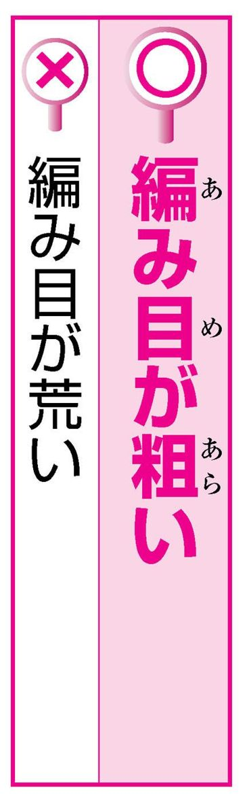
「このセーターは編み目がアライ」
「荒」は草が地を生い茂る、という文字で、「荒い」は「勢いが激しく、乱暴なこと」といった意味です。用例としては「金遣いが荒い」「波が荒い」「人使いが荒い」などがあります。
「粗」はよくつかれていない米を表す文字で、そこから、粒が大きいことや織物の目が大きいこと、ざらざらして滑らかでないこと、大ざっぱなこと、粗末なことなどの意味が生じました。用例としては「編み目が粗い」「肌理が粗い」などがあります。
「最下位転落のウキメを見る」「失恋のウキメにあう」
つらく悲しいこと、つらく悲しい経験のことをいいます。
「憂き」は、つらい・せつないの意の古語の形容詞です。似たような語で「浮き世」という言葉があります。もとは、つらいことの多い世の中の意で「憂き世」と書いたのが、のちに「浮き世」と書かれるようになりました。
しかし、「憂き目」は、「浮」では書きません。
不幸せ 幸せ
「念願の司法試験に合格して、ウチョウテンになった」
「うちょうてん」とは仏教語です。
形のある世界（欲界・色界・無色界）の最も上に位置する世界（＝天）のことで「有頂天」と書きます。
「有頂天になる」とは、有頂天にのぼりつめたように得意・喜びの絶頂にいて、我を忘れることです。
「頂点」とは関係がありません。
大得意
「こちらは社長のオイゴさんの太郎さんです」
他人の甥を敬っていう言葉です。
「ご」は人を指す言葉の下に付いて敬意を表す「御」で、子供の「子」ではありません。「親御」も甥御と同じく「御」によって敬意を添えた言葉です。
自分の甥についていう、ややくだけた表現に「おいっこ」があります。それを「甥子」と書くことはできます。しかしこの場合は「甥っ子」と表記したほうが紛らわしくないでしょう。
姪御
「お祝いに、仲間を集めてオウバンブルマイをする」
「おうばん」は本来は、「椀飯」と書きます。
「椀飯」は、わんに盛った飯の意味です。「おうばんぶるまい」は正月に親類を集めて盛んにもてなしたことからできた言葉で、盛大なもてなしをすることを表します。
のちに誤って「大盤振る舞い」「大番振る舞い」などと書かれるようになりました。
「大番振る舞い」は誤りですが、「大盤振る舞い」は広く使われています。
「政界のオオモノ」「経済界のオオモノ」
その方面で大きな勢力・影響力をもっている人物のことです。「若者・悪者」など、人のことを指す「もの」は「者」と書くのが普通なので、うっかり「大者」と書いてしまいがちです。
しかし、もともと「大物を釣り上げる」のように、同類中の大きくて価値がある物という意味からできた言葉なので、「大物」と書くのが正しい表記です。ただし、「大者」という書き方を認めている辞書もあります。
有力者
「強敵と対戦しても、オクすることがない」
気後れしておどおどする、おじける、という意味です。
「臆」の字が常用漢字表にないため、「臆測・臆説」など推量する意で「臆」を使う語の場合は、りっしんべんの「憶」で代用して「憶測・憶説」と書くことがあります。
しかし「臆する」や「臆病」「臆面もなく」など、「臆」が気後れする意で用いられる場合は、「憶」では代用しません。
恐れる
「君ったら、流行にオクレてるね」
「遅れる」の「遅」は、「遅刻」と使われるように、「一定の時刻・時期よりも後になる」という意味です。
「式典の開始が遅れる」といえば十時にはじまるはずの式典が十時過ぎの開始になったということになります。
これに対し、「後れる」の「後」は「他のものよりも後になる」という意味です。
「人に後れをとる」「流行に後れる」などがその例です。
「オジさん、卒業祝いを、どうもありがとうございました」
「伯父」も「叔父」も、どちらも「おじ」です。どちらを使っても同じ、と思ってはいませんか。
子どもからみて父ないし母の兄が「伯父」で、父母の弟が「叔父」です。
同じように父母の姉は「伯母」で、妹は「叔母」です。
おじさんに手紙を書くときなど、この使い分けを間違えると、非常識なやつだと思われかねません。
「盆と暮れは商店街のカキイレ時だ」「夏のカキイレ時に一年分稼いでしまう」
商売が忙しく、もうけの多い時、という意味の語です。
もとは、売り上げを帳簿に書き入れるのに忙しい時、という意味から出た言葉です。ですから、「掻き入れ時」と書いては間違いです。
この誤記は、客が落とす金を熊手で掻き集めるようにしてふところに入れる、というイメージによるものでしょうか。
繁忙期

「ひるんだところをカサにかかって攻撃する」「カサにかかった言い方をする」
優位の地位・立場をいいことにして相手を威圧することです。
「嵩」は、物の高さや大きさの意から転じて、相手を圧倒する勢いの意味です。
一方、有力者の権勢や自分の地位などを頼みにして威張ることをたとえた「笠に着る」という慣用句があります。
「嵩」と「笠」で取り違えられやすいので注意が必要です。
「父は絶対に私たちの結婚を認めないとカタイジを張った」
頑固に自分の考えを押し通すことです。
「片」は他の語の上に付いて、一方に片寄るという意を表す語です。「頑固」「頭が固い」の連想から、「固」とつい書きたくなりますが、片寄った意地という意味で「片意地」と書きます。
ちなみに、音や意味の近い慣用句に「肩肘張る」があります。気負う、威張るという意味で、「片意地を張る」とは意味が少し違います。
意地を張る
「お互いのカチカンの違いに気づいた」
「価値かん」の「かん」は「感」と書くか「観」と書くか迷う人が多いようです。
「感」は、安心感・罪悪感・満足感などのように使われ、そのようになっている感じ、気持ちを表しています。また、「観」は人生観・世界観などのように使われ、その物事についての見方、考え方を表しています。では「価値かん」はどちらでしょう。「価値のあるなしについての見方、考え方」というほどの意味ですから、「価値観」とすべきでしょう。
「どうかカンニンして下さい」
怒りを抑えて、人の過ちを許すことです。
「堪」は、たえる・こらえるの意で、「堪忍」は本来、肉体の苦痛やつらい境遇にたえることをいいました。「堪忍」と似た言葉に「勘弁」があり、こちらは「勘」を使います。「勘」はよく考える意で、「勘弁」は、よく考えて処理することから、「いろいろな事情を考慮して許す」という意味になったものです。
「堪」と「勘」の混同に気をつけましょう。
容赦 放免
「わかりもしないくせに、キイタフウなことを言うな」
何も分からないのに、いかにも物の分かったような生意気な態度をとることです。
「知ったかぶり」と似た言葉です。
「きく」は「気が利く」「目が利く」というときの「利く」で、「じゅうぶんなはたらきをする」という意味です。
「知ったかぶり」の意味から、さらに、聞きかじっているの意味と解釈して「聞いた風」と書き誤ってしまうのでしょう。

「ありがたいお言葉、肝にメイジテ忘れません」
正しく書くとすると、これは「肝に銘じて」です。
「肝」は心、「銘ずる」はしっかり刻み込む意味です。「肝に銘ずる」とは、人の忠告や教えなどを、忘れないようにしっかりと心に刻み込むことです。
「命ずる」は、言いつける、命令する意味ですから、「肝に命ずる」では自分の心に命ずるという意味になってしまいます。
心に刻む 胸に刻む
「松井選手がギャクテンのホームランを打ち、チームは見事に勝利した」
「ぎゃくてん」とは、形勢・順位などが、それまでとは反対の状態になることです。
もとは、車などがそれまでとは反対の向きに回転する「逆転」の意味から派生したものです。「ぎゃくてん」は、点を取り合う野球などのスポーツでよく使われるため、点数が逆になったことを言うつもりで「逆点」と書いてしまうのかもしれません。しかし、「逆点」という語はありません。

「高熱が出たので、ゲネツザイを飲んだ」
高い熱を下げることを「げねつ」といいますから、「下熱」と書くのが当たり前のような気がします。
高い体温を下げるという意味で「下熱」を認める辞書も一部ありますが、薬はやはり「解熱剤」と書くのが普通です。
「解」には、とき放す、取り除くなどの意味があります。病気による高熱を取り除き、正常の体温にするという意味で「解熱剤」なのです。
熱冷まし
「大学のコウギに出席する」「集中コウギ」
「講」は、説き明かす、という意味です。「義」は意味・道理のことです。すなわち「講義」は、「意味や道理を説き明かす」ということです。
一方、「議」は、意見を出して話し合う（「議論」「談議」など）、意見（「異議」など）、批評をする（「物議」など）、などの意味をもつ漢字です。「講義」は本来、先生が学生に説いて聞かせる一方的な行為です。よって、「議」では書きません。
講座 講習
「汚れをゴウセイ洗剤で落とす」
「合成」とは、二つ以上のものを合わせて一つのものを作ることです。
化学用語としては、二種以上の元素から人工的に化合物を作ること。また、簡単な化合物から複雑な化合物を作ることです。
「合成洗剤」は、化学的に合成して作った洗剤のことですから、「合性」は間違いです。
また、「洗剤」の「剤」は「くすり」の意味です。洗たく＝水で洗うというイメージが強いためか、「済」と書く間違いを時々見かけます。
「寒さが骨身にコタエる」「忠告が骨身にコタエた」
「こたえる」という語は「答える」「応える」がありますが、応答・回答するのが「答える」で、影響を受けたり応じたりするのが「応える」です。例文の場合、回答するの意の「答える」では意味が通りません。マイナスの影響を受けるということですから、もし漢字表記するなら「応える」です。（なお、「応える」は常用漢字音訓表にはありません。）
骨身にしみる
「コヂンマリとした店」「コヂンマリと暮らす」
小さいながら過不足なく整っているさまのことです。
現代仮名遣いでは「ぢ」「づ」は普通「じ」「ず」で書くことになっています。ただし、上に他の語が付いて濁ったもの（「はなぢ（鼻血）」「そこぢから（底力）」など）は「ぢ」「づ」と書きます。「こぢんまり」は、小さくまとまっている意味の「ちんまり」に「こ」が付いて濁った形なので、「こぢんまり」と書くのが正しい表記です。
「コベツ訪問をして、投票をお願いする」
「こべつほうもん」とは、家を一軒一軒たずねて回ることです。
特に、選挙の候補者や運動員が投票を依頼するために、各戸を訪問して回ることです。（日本では公職選挙法で禁止されています。）「個別」は一つ一つ、それぞれを別々に扱うことであり、「戸別」は一軒一軒の家ごと別々にすることですから、「個別」は誤りです。
なお「個別」は、「個別指導」「個別交渉」「個別対応」のように使います。
「みなさん、コンニチハ」
あいさつの言葉「こんにちは」は、「今日はよいお天気で」「今日は御機嫌いかがですか」などのあとの部分が略されたものです。「は」は「今日は土曜です」の「は」と同じ助詞であることから、「こんにちは」と書きます。これは「現代仮名遣い」（内閣告示）でそう取り決められています。ところで、「いまわの際」の「いまわ」も、本来「今は限り」ということですが、この場合は「いまわ」と書くことになっています。必ずしも首尾一貫していません。
「経費をサイショウゲンにおさえる」「サイショウゲン必要な知識」
ある範囲内で最も小さいことです。
「大小」「多少」のように「大」には「小」、「多」には「少」がふつう組み合わせられます。
この語は「最大限」の反対ですから、「最小限」となります。
ただし、「最少得点」「最少催行人員」など数が最も少ないという意味の「さいしょう」は、「最少」と書きます。
最大限
「雨に降られてサンザンな目にあった」
物事の結果や状態がひどく悪くて目も当てられないさまのことです。古くはちりぢりになったようすをいい、そこから現在の意味へと転じたようです。表記は「散々」で定まっています。「みじめ」という意味では、「惨々」と書いたほうが感じが出るようにも思えますが、そうは書きません。
なお、「惨々」と書いて「さんさん」と読む語はあり、いたましいことや暗いことを表します。ただし、現代ではまず使われません。
「ライバルとしてシノギを削り、共に成長してきた」
「鎬を削る」とは、互いに相手より優位に立とうとして、激しく争い合うことです。「鎬」は、刀の刃と峰の間の小高くもり上がっている部分で、ここを削るほど激しく刀で切り合うことからできた言葉です。一方「凌ぎ」は、「急場凌ぎ」「退屈凌ぎ」のように、苦しい局面やつらいことを、なんとかもちこたえて切り抜けることです。「鎬を削る」が正しい書き方です。
火花を散らす
「人の情けが心にシミル」
「しみる」には「染みる・沁みる・浸みる・滲みる」などの漢字表記がありますが、「心にしみる」「身にしみる」などでは、「染」のほか、「沁」の字もよく使われます。漢字「沁」は、奥深くしみこむ意を表します。ところが、この「沁」が「泌」と混用されていることがよくあります。「泌」にも「しみる」という訓はありますが、「泌」は「分泌・泌尿器」のように「にじみ出る」意を表します。心身にしみいるという場合、こちらの字は用いません。
「交通ジュウタイにつかまってしまった」
「渋」も「滞」も、なめらかに動かず、とどこおることを表します。「渋滞」は、物事がとどこおってすらすらと進まないことです。「事務が渋滞する」「話が渋滞する」というような使い方もあります。
「滞」の字は、帯が腰にまといついているように、水がたまって動かないことから、とどこおるという意味を表し、「帯」とは意味が異なります。
停滞
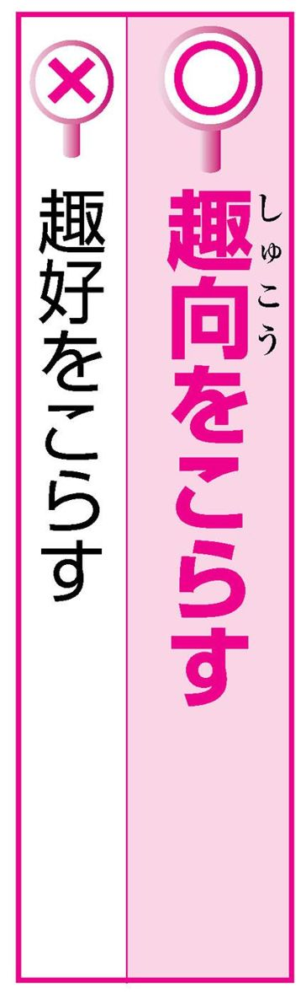
「訪問先で、シュコウをこらしたもてなしを受けた」
「趣向」とは「おもむき」、「おもむきやおもしろみを出すための工夫やアイデア」のことです。「趣向をこらす」とは、おもむきを出すためにあれこれ工夫するという意味です。
その、おもむきやおもしろみというのは、当然その人のセンスや好みが反映されます。
「趣向」を（「嗜好」などを連想し、）「趣好」と書いてしまうのも、そのあたりに原因があるのかもしれません。
「甲子園でのショセンを勝利で飾る」
戦いの始まりの段階、そこから転じて、一連の闘いや試合のうち、最初の戦い・試合のことです。
最初の戦いなら「初戦」でもいいように思えますし、新聞などでは「初戦」の表記の方が圧倒的に多いようです。しかし実はあまりよく知られていませんが「緒戦」が本来の書き方です。「初戦」を認める辞書はまだ少ないようです。
漢字「緒」は「端緒・緒論（＝序論）」のように、物事の始まり、いとぐちの意味です。
「うわさのシンギを確かめる」
「真偽」の「真」は「まこと」、本当のことという意味です。「偽」は「いつわり」、真実ではないということです。
本当かうそか、また、事実かそうでないかを確かめることを「シンギを確かめる」というわけですから、「真疑」では意味をなさず、不適当です。「信疑」（信ずることと疑うこと）との混同で、書き誤ってしまうのでしょうか。いずれにせよ、「真疑」という言葉はありません。
虚実 真贋

「チカラズクで押し倒す」
「〜ずく」は、名詞に付いて「力ずく・計算ずく」のように、それだけを手段とする意や、それがすべてである意を表す言葉です。漢字では「尽く」です。ですから、仮名で書くと「づく」かと思われがちです。しかし、現代仮名遣いでは「ずく」と書くのを本則とし、「づく」と書いてもよいとしています。「黒ずくめ」「いいことずくめ」などの「ずくめ」も、漢字では「尽くめ」ですが、仮名で書けば「ず」です。
腕ずく
「信念を貫け。セツを曲げるな」
「セツ」は「節」です。「説を曲げるな」ではありません。「節」とは、竹の節目のことですが、そこから、はみ出さないようにおさえる、勝手な行いをおさえる、自分が信じて変えない考えなどの意味が生まれました。「説」は、ある物事に対する意見・主張です。どちらも「考え」という点で共通していますが、「セツを曲げるな」の「セツ」は信念・信条という意味なので、「節」が正しいのです。
節を折る 節を全うする
「...です。以上ご報告まで。ソウソウ」
「草草」とは、簡略なさま・粗略なさまのことです。
手紙文の末尾に用い、「前略」「冠省」などと照応させて、走り書きをわびる気持ちを表す語です。「匆匆」とも書きます。
「早早」は、ある状態になってすぐの意、また、急いで物事をするようすです。「開店早々から忙しい」「早々に用事をすませる」などと使います。ワープロでは最初に「早々」と変換されることがあるので注意が必要です。
「タヤスい仕事」「いともタヤスく解決する」
わけなくできるさまのことです。「手」は「手綱・手折る」のように他の語と結び付くとき「た」となることがありますが、「たやすい」の「た」は、手とは無関係の接頭語と考えられています。したがって漢字を使って書き表すなら「た易い」となるところです。しかし「た易い」では何となく落ち着かないので、全体を平仮名で書くか、意味の似た熟語「容易」を当てて書くことになっています。
易しい 難しい

「ツイチョウキンを課する」
あとから取り立てる不足分の金銭のことです。
「徴」は、「徴収・徴税」のように取り立てるという意味です。「徴」に「心」が付くと「懲」となり、「懲罰・懲役」のように、こらしめるの意味になります。「追徴金」は税金などを納めていないときに、こらしめに請求される金と誤解されやすいですが、言葉自体は懲罰の意味を含んでいません。追って懲らしめるということではなく、追って取り立てるということですから、「追懲金」と書いては誤りです。
「あら、このトウ椅子、素敵ね。ねえ買って」
近年、アジアンテーストの家具がブームで、籐製品も人気があります。
「籐」は、あの、うす紫色の花をふさ状に咲かせる藤とは違うということは、おそらく皆さんご存知のはずではないでしょうか。
しかし、家具屋さんでさえ、藤椅子だの、藤のチェストだのと書き間違えているのを目にします。これはもう、単純なミスだと思われます。「草かんむり」と「竹かんむり」の違いを何も考えず、つい書いてしまったのでしょう。
「いずれ不良企業はトウタされる」
トウタは「淘汰」と書きます。「淘汰」とは、良いものを選び悪いものを除くことです。「淘」も「汰」も「さんずい」がついていますが、どちらも水で洗い、ゆすってより分けるという意味です。一方の「陶」には、やきもの（陶器）、うっとりする（陶酔）、教え導く（薫陶）などの意味があります。しかし、より分ける、という意味はありません。音も字の形も似ているための混用だと思われます。
整理
「新人賞を受賞したものの、その後はナカズ飛ばずだ」
長い間活躍することもなく、人から忘れられたようになっているようすのことです。
中国の『史記』の「三年飛ばず鳴かず」が出典で、三年間飛びも鳴きもしないでいる大きな鳥にたとえて、将来の活躍にそなえ、力をたくわえてじっと機会を待っていることをいいました。現在、この原義とは違う意味で使われますが、表記は出典どおり「鳴かず飛ばず」です。
三年飛ばず鳴かず

「ハイケイ時下ますます御清祥のこととお慶び申し上げます」
書簡の冒頭に記して相手に敬意を表す語です。
「拝」はへりくだって何かをする意、「啓」は「一筆啓上」の「啓上」と同じく、申す意です。「拝啓」で、つつしんで申し上げますの意味になります。敬意を込める連想からうっかり「拝敬」と書いてしまいやすいので注意が必要です。
なお、「拝啓」で書き出した場合、書簡文の末は「敬具」で結ぶのが普通です。
謹啓
「馬のヒヅメに蹄鉄を打つ」
「ひづめ」とは、馬・牛・鹿などの足先にある、堅い角質のつめのことです。「ひづめ」の語源については諸説がありますが、「つめ（爪）」に何か他の語が付いてできた言葉という点ではいずれも共通しているようです。仮名書きする場合は、上に他の語が付いて「つめ」が「づめ」と濁音になったものなので、「ひづめ」と書くことになっています。同じ理由から、「たけづつ（竹筒）」「こづつみ（小包）」「にいづま（新妻）」などは、みな「づ」と書きます。
「よし、私が全部引き受けた、とミエを切った」
もとは歌舞伎で、役者が感情の高揚した場面で一瞬動きを停止して、にらむようにして一定のポーズをとることでした。
転じて一般に、いかにも自信たっぷりの言動をすることをいいます。
一方、「見栄」は「見栄を張る」の形で多く使われ、他人によく見られようとしてうわべを飾ったり体裁をつくろったりすることです。
大見得を切る
「お前とはもう別れる、とミクダリハンを突きつける」
「みくだりはん」とは、江戸時代、庶民の間で行われた、夫から妻に対する離縁状のことです。「くだり」は文章の行のことで、三行半で簡略に書く習慣があったところからいいます。「〜を突きつける」などの形で、関係を絶つことの表明の意味にも用います。行の意の「くだり」は語源的には「下り」から来ていますが、表記としては、「三行半」の表記のみを示している辞書が多いようです。
「モミジガリの観光客が押し寄せた」
山野に紅葉をたずねて楽しむことです。
「狩り」は他の語の下に付く場合、「魔女狩り・山狩り」など追い立てて捕らえるという意味のほか、「潮干狩り」のように魚介をとる意味や、「きのこ狩り・桜狩り」など、植物を採集または鑑賞するという意味を表します。実をもいで楽しむ「イチゴ狩り・梨狩り」なども「刈り」とは書きません。紅葉狩りは、芝生や雑草を刈るように紅葉を刈るわけではないのですから、「紅葉刈り」は誤りです。
「ユウゼンたる態度」
「ゆう然」とは、物事に動ぜず、ゆったりと落ち着いているさまをいいます。
ですから、「余裕」の「裕」という字を書くと思い込んでいる人もいるかもしれません。しかし、「悠然」と書きます。
「悠」は「とおい」とか「はるか」とかいう意味で、「悠久」などの言葉がありますが、また、「ゆとりのある、のんびりした」という意味もあります。
悠々 悠長 悠揚
力だめし①
書き間違いチェック ～第１章で扱った言葉より～
問題１
漢字を間違って使っている箇所があれば直してください。
１ 九回裏に３点を取って逆点した。
２ 固意地を張る。
３ 最小限必要な知識。
４ 年末の掻き入れ時。
５ 高熱が出て、下熱剤を飲む。
６ 追懲金を取り立てる。
７ 寒さが骨身に答える。
８ 交通渋帯
９ 大学の講義に出席する。
10 うわさの真疑を確かめる。
問題２
カタカナの部分は漢字でどう書くでしょう。（ ）の中から正しい方を選んでください。
１ 人の情けが身にシ（沁／泌）みる。
２ いちごガリ（狩り／刈り）に行く。
３ アナタ（貴男／彼方）任せ。
４ ナ（泣／鳴）かず飛ばず。
５ シュコウ（趣向／趣好）をこらしたもてなし。
６ 企業がトウタ（陶汰／淘汰）される。
７ ハイケイ（拝敬／拝啓）いかがお過ごしでらっしゃいますか。
８ この仕事は全部私が引き受ける、とミエ（見栄／見得）を切った。
力だめし① 解答
問題１ 答え
１ ×逆点→逆転
２ ×固意地→片意地
３ ○
４ ×掻き入れ時→書き入れ時
５ ×下熱剤→解熱剤
６ ×追懲金→追徴金
７ ×答える→応える
８ ×渋帯→渋滞
９ ○
10 ×真疑→真偽
問題２ 答え
１ 人の情けが身に沁みる。
２ いちご狩りに行く。
３ 彼方任せ
４ 鳴かず飛ばず
５ 趣向をこらしたもてなし。
６ 企業が淘汰される。
７ 拝啓 いかがお過ごしでらっしゃいますか。
８ この仕事は全部私が引き受ける、と見得を切った。
「夫婦はイッシンドウタイ」
気持ちが完全に一致してお互いに強く結び付くことです。
二人（または複数）の人が、気持ちも行動もぴったり合い、あたかも心もからだも一つであるかのようなさまをいいます。
「一身同体」では、からだだけが一つになり心はどうかわからないことになります。こういう四字熟語はありません。一つの心に同じ体という意味で「一心同体」と書きます。
異体同心
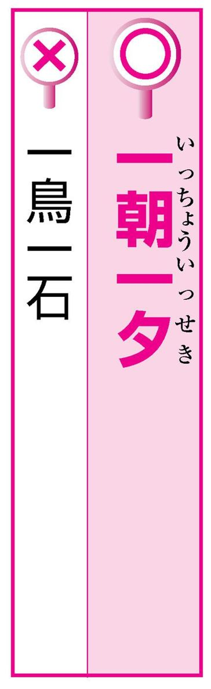
「信用はイッチョウイッセキに得られるものじゃない」
「イッチョウイッセキ」という音を聞いただけで、「一朝一夕」を思い浮かべることができる人は少ないようです。「一鳥一石」と書き誤る人が多いようです。
「一朝一夕」は、読んで字のごとく「ひと朝かひと晩」つまり「わずかな時日」のことです。これを「一鳥一石」としたのでは、なんのことかわかりません。「夕」を「せき」と読むのが難しいことと、「一石二鳥」と混同したものでしょう。
「キキイッパツのところで助かった」
もう少しで大変な危険におちいるという瀬戸際のことです。
「一髪」は「一髪千鈞（一本の髪の毛で非常に重いものを引く。非常に危険なこと）」の一髪と同じで、髪の毛一本ほどのわずかな違いで危険や困難におちいるかどうかという、きわめて危ない状態をいいます。「危機一発」という言葉はありません。同様の状況に用いられる「間一髪」も「発」ではなく「髪」なので注意が必要です。
一触即発
「試験に合格して、彼はキショクマンメンだった」
うれしそうな表情が顔に満ちあふれていることです。喜びの色が顔中広がっているさまのことです。
「喜色」は喜びの表情、「満面」は顔中いっぱいの意です。
一方「気色」は、喜びや悲しみとは限定しない顔の表情のことです。ですから、「気色満面」といっても何のことか意味がわかりません。
得意満面
「鍵をかけ忘れたのではないかとのキョウハクカンネンにとらわれる」
馬鹿げているとわかっており、考えまいと思っても頭から払いのけることができない考えのことです。
「強迫」は、強く迫るの意ですが、この場合は、他人が自分に強く迫ってくるのではなく、自分の心の中の何かが強く迫ってくるのです。
一方の「脅迫」は、他人にあることを行わせようとおどしつけることです。意味が違います。
「脅迫観念」という語はありません。
「今後の展開にはキョウミシンシンたるものがある」
あることに対し興味が尽きないさま、非常に関心があるさまのことです。
「津」はあふれる、うるおう、の意で、「津津」は多量にあふれ出るさまを表します。
「深深」は、奥深くかすかなさま、静まりかえったさま、寒さの身にしみるさまをいい、「夜が深深とふける」などと使います。「興味深い」とはいいますが、「興味深深」とはいいません。
興味索然

「あいつときたら、まったくコウガンムチな男だ」
厚かましく恥知らずなことです。「厚顔」は、厚い面の皮、つまり、ずうずうしいことです。「無恥」は、恥じる心がないこと、恥を恥と思わないこと、つまり、恥知らずであることです。
一方「無知」は、知識がないこと、おろかなことです。「無知蒙昧（学問がなく、物事の道理を知らないこと）」のようにいいますが、しかし「厚顔無知」という四字熟語はありません。
鉄面皮
「信頼していた友人にまで裏切られ、コリツムエンとなってしまった」
仲間もなく、助けてくれる者がいないことです。「孤立」はひとりで立つこと、「無援」は援助がないことです。「無縁」と書くと、関係がない、ということになりますが、何と関係がないのかがわからないと意味が通じません。「孤立」と関係ないというのも意味をなしません。
また、「孤立」を「弧（円周の一部分）立」とする書き間違いにも注意が必要です。
孤立無助
「就職したはじめの一年間は何もわからず、ゴリムチュウといった状態だった」
方角が分からなくなってしまうこと。物事のようすがまったくわからず、方針や見込みが立たないことです。
この四字熟語は、三字熟語＋一字の構成となっています。「五里霧」とは、仙術で、人の方向感覚を失わせるために作る、五里四方を閉ざす霧をいいます。その五里霧の中にいるようだというのが、この語の意味です。「五里夢中」は「無我夢中」との混同と思われます。
「人のものを盗むとはゴンゴドウダンだ」
あまりひどくて言葉も出ないほどであること、とんでもないことの意です。
もとは仏教語で、仏教の奥深い真理は言葉では説明できないことをいいました。しかし、現在はふつう、「もってのほか」の意で使います。
「道断」の「道」は「報道・唱道」などの「道」と同じで、言う・述べるの意です。
一方「同断」は、同じようす・事情であるさまをいう語です。「これも先ほどの例と同断だ」のように用います。「言語同断」は誤りです。
「祭典は大成功だったと主催者側はジガジサンしている」
自分のした行為を自分でほめることです。
原義は、自分の描いた絵に自分で「賛」（絵の中に書き入れる詩文）を書くことでした。賛は通常、絵の作者とは別の人に書いてもらいます。この「賛」という漢字には、ほめる意もあるため、「自画自賛」が自分で自分をほめる意味に転じたのでしょう。「自我自賛」と書いては、意味が通りません。
手前味噌
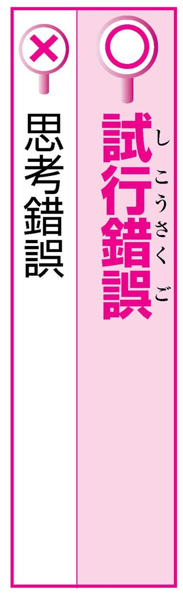
「シコウサクゴを重ねたすえ、ようやく成功にたどりついた」
新しい物事をする際、試みと失敗をくり返しながら次第に見通しを立て、解決策を見いだしていくことです。
英語の trial and error の訳語です。
「試行」は試しに行うことの意で、「錯誤」は間違い、誤りの意です。
「しこう錯誤」はたしかに、思考と失敗をくり返してみることではありますが、「思考錯誤」とは書きません。
「ジュウオウムジンの活躍ぶり」
自由自在に物事を行うさま。思う存分、ということです。
「縦横」は、たてとよこの意から転じて四方八方の意、「無尽」は、尽きない、限りないという意です。合わせて、四方八方どの方面へも限りないという意です。
そこから、「思う存分」という意味になります。
「縦横無人」とは書きません。
自由自在
「情報をシュシャセンタクする」「シュシャセンタクして歌集を編む」
悪いもの・不必要なものを捨てて、良いもの・必要なものを選びとることです。
「取」はこの場合、あるものを必要なもの、適当なものと決め、採用することで、「拾」とは少し違います。
「捨てる」の反対は「拾う」ですが、「拾捨」という熟語はありません。目の前のいくつかのものから選択する場合は、選び取るのですから、やはり「取捨」がふさわしいでしょう。
「シュッショシンタイを明らかにする」
官職や地位にとどまっていることと、やめて退くことです。身の振り方や身の処し方のことです。
「出」は官職につくこと、「処」は官につかず家にいることです。「進」は今の職務を進めること、「退」は退職することです。
「出所」と書くと、物事の出た所、出どころの意、あるいは、刑務所から出ることの意となります。
進退出処
「ショウシンショウメイのダイヤモンド」「ショウシンショウメイ、間違いはない」
うそ偽りのまったくないこと、本物であることです。「正真」は、うそいつわりがないことです。「正銘」は、にせものでなく本当にその名で呼ばれるものである、ということです。
「銘」とは器物に刻んだ製作者の名で、銘が正しいとは、作品が本物だということです。
「証明」は、あることが事実または真理であることを明らかにする意で、本物であることという意味ではありません。
「ショセツフンプンとして、いずれが真実か明らかではない」
多くのいろいろな説や意見が入り乱れて、まとまらないさまのことです。
「紛紛」は、入りまじって乱れるようすです。
「粉粉」は、「ふんぷん」とは読まず、「こなごな」と読みます。「諸説粉粉」では意味が通りません。また、うそくさい説が入り乱れるという連想からか、「諸説プンプン」と言ったりする人がいますが、もちろん誤りです。
議論百出
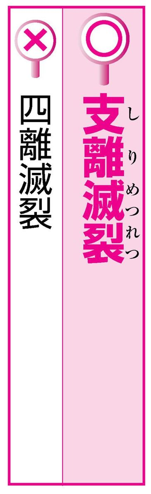
「酔うと彼の言うことはシリメツレツになる」
まとまりがなく、ばらばらであることです。
一人の人間の言うことや思うこと、あるいは一つの作品などについて言います。
「支」は、分かれる意です。「支離」でばらばらになることの意で、「滅裂」もほぼ同じ意味です。
多数の人間の組織などがばらばらである場合に「四分五裂」と言いますが、「四離滅裂」は、それと混同したための誤りでしょう。
乱雑無章 理路整然
「シンキイッテンして仕事に励む」
何かをきっかけにして、気持ちがすっかり変わることです。
「心機」は、心の動き・働きのことです。
「新規」は、今までのものとは別に新たに事を始めることです。「新規蒔き直し」という言葉はありますが、「新規一転」はありません。
また、「心気一転」とする間違いもよく見られます。「心気」も、心持ち・気分の意ですが、静的にとらえた心のことです。「心気」を用いた「心気一転」という語もありません。
「セイテンハクジツの身となる」
よく晴れわたった真っ青な空と、輝く太陽のことです。転じて、無実が明らかになることのたとえとして用いられます。
また、心に後ろめたいこと・やましいことのまったくないさまのたとえで、「青天白日の心境」などとも使われます。
「青天」でも「晴天」でも、意味は大して変わりませんが、青と白の色彩的対比を使った四字熟語なので、「青天白日」であるべきでしょう。
白日青天
「あれこれ言い訳をしてセキニンテンカばかり考えている」
自分の取るべき責任を、他人になすりつけることです。
「転嫁」は、再度の嫁入りの意から転じて、他人におしつけることです。
「転化（する）」は、「愛情が憎悪に転化する」のように、自ら変質したり変化したりする意を表します。
「責任転化」では責任そのものが変化・変質するということになってしまいます。
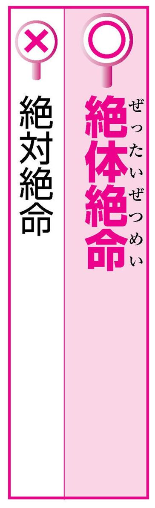
「自転車操業でやってきたが、いよいよゼッタイゼツメイのピンチに陥った」
どうにも逃れようのない、差し迫った状態や立場にあることです。
「絶体」「絶命」とも、九星術（九星によって人間の運命その他の吉凶を判断する術）での凶星の名です。
占いで「絶体」や「絶命」が現れると、運がきわまって破滅するとされます。
このような由来があるため、「絶体」を「絶対」としては誤りです。
「タントウチョクニュウにお聞きしますが...」
前置きなどを省いて、すぐ本題に入ることです。「単刀」とは一本の刀のことで、もとは、一本の刀を手に一人でいきなり敵陣に突入する、という意味でした。
昔の戦いは、初めに遠くから矢を射かけたりするのが普通だったので、この比喩が成り立ったわけです。
しかし、刀は短刀でなくてもよいわけですから、「短刀直入」では不自然です。
直截 端的
「上高地はフウコウメイビな地として広く知られる」
自然のながめが、すぐれて清らかで美しいこと、また、そのさまをいいます。
「風光」は、自然のながめ、景色のこと、「明媚」は、非常に清らかで美しいことです。「媚」は、なまめかしいなどの意もありますが、ここでは、人の心をひきつける美しさ、という意味です。
「明美」を認める辞書もありますが、四字熟語としてはあくまで「風光明媚」と書きます。
山紫水明
「フトウフクツの精神でやり抜く」
意志が強く、どんな困難にあってもひるまず、決してくじけないことです。
「撓」は、たわむ、まがるの意で、「屈」は、折れ曲る、かがむ、などの意です。「不撓」と「不屈」は、ほぼ同義の対語です。一方「不倒」は、倒れない意で、スキーのジャンプ競技の「最長不倒記録（転倒することなく最も遠くまで飛ぶことのできた距離）」などに使われます。しかし「不倒不屈」という四字熟語はありません。
不屈不撓 独立不撓
「多数派にフワライドウする」
自分にしっかりした考えがなく、他人の意見にすぐ同調することです。
「付和」は他人の意見に付きしたがい、あいづちを打って賛成する意です。「雷同」は、雷鳴に応じてあたりのすべての物が響くように、むやみに他人の言動に同調することです。「付和」と「雷同」はほぼ同義です。「不和」は仲が悪いことです。「不和」と「雷同」をくっつけては、意味がちぐはぐになってしまいます。
吠影吠声 阿付雷同
「ムガムチュウで逃げる」
物事に心を奪われて、我を忘れた状態になることです。
「無我」は、我を忘れる、無意識的になる、という意味です。もとは仏教語で、「我の存在を否定すること」でした。ただし、ここではその意味ではありません。
「夢中」は、そのことに心を奪われ、ほかのことは頭の中から消えてしまうさまです。「無中」という語はなく、「無我無中」は誤りです。
一心不乱
「功を焦らず、ムネンムソウで事に臨む」
あらゆる雑念がなくなって、心が澄み切っている状態のことです。無我の境地に入り、無心になることです。「無念」には、くやしくてたまらない意もありますが、この場合は、雑念・妄念がいっさいないことです。「無想」も同じで、心に何も思わないことです。「夢想」は、これとは逆で、夢のようなことをとりとめもなく思い浮かべることです。「無念夢想」としては、語の中で意味が矛盾してしまいます。
千思万考
「ユウジュウフダンで、何事もなかなか決められない」
ぐずぐずして物事の決断のにぶいこと、また、そのさまです。「優」には、やさしい、すぐれるなどの意がありますが、ぐずぐずしていてのろい、という意味もあります。「柔」は、やわらかい、やさしいなどの意です。
「優柔」で、ぐずぐずしていて決断力に乏しい、という意味です。「不断」もほぼ同義です。
「優従」と書く熟語はありません。
意志薄弱 剛毅果断 進取果敢
「私の家内は、理想的なリョウサイケンボです」
良き妻であり、かつ、賢い母であることです。
一人の女性が、夫に対する妻、子に対する母、という二つの役割を、両方ともよく演じること、またそのような人のことです。
「良妻兼母」と書くと、良き妻は母を兼ねるという意味になってしまいます。
夫がとりわけ子供っぽい場合は、そういうこともありうるかもしれませんが、一般的にいえることではないでしょう。
このような四字熟語はありません。
力だめし②
書き間違いチェック ～第２章で扱った言葉より～
問題１
漢字を間違って使っている箇所があれば直してください。
１ 危機一発のところを救い出された。
２ この先、まったくの五里夢中だ。
３ 言語道断の行い
４ 彼の自我自賛には、うんざりした。
５ 思考錯誤のすえ、解決できた。
６ 新規一転、一から出直す。
７ 縦横無人の活躍ぶり
８ やじ馬が興味深深と見守る。
９ 青天白日の身となる。
10 たとえ孤立無縁となっても戦う。
問題２
カタカナの部分は漢字でどう書くでしょう。（ ）の中から正しい方を選んでください。
１ イッシン（一身／一心）同体
２ 厚顔ムチ（無知／無恥）
３ シュシャ（拾捨／取捨）選択
４ フワ（不和／付和）雷同
５ ゼッタイ（絶対／絶体）絶命
６ 無念ムソウ（無想／夢想）
７ 無我ムチュウ（無中／夢中）
８ ユウジュウ（優柔／優従）不断
力だめし② 解答
問題１ 答え
１ ×危機一発→危機一髪
２ ×五里夢中→五里霧中
３ ○
４ ×自我自賛→自画自賛
５ ×思考錯誤→試行錯誤
６ ×新規一転→心機一転
７ ×縦横無人→縦横無尽
８ ×興味深深→興味津津
９ ○
10 ×孤立無縁→孤立無援
問題２ 答え
１ 一心同体
２ 厚顔無恥
３ 取捨選択
４ 付和雷同
５ 絶体絶命
６ 無念無想
７ 無我夢中
８ 優柔不断
「彼女は客に、やたらと愛想を振りまいていた」
「愛敬」は「愛嬌」とも書き、憎めないようなかわいらしい表情やしぐさのことです。
人から好感をもたれる表情や振るまいをすることを「愛敬を振りまく」と言います。
一方の「愛想」も、人に好感をもたれる言葉づかいや表情、態度のことで、似たような意味です。しかし「愛想」の方は、愛想が「いい」とか「悪い」のように言います。「振りまく」とはいいません。
「いつも忙しい彼は、夕飯も味あわないで急いで食べます」
「合う」「拾う」のようにウで終わる動詞は、「合わない」「拾わない」のように打ち消しの形にワが現れます。
したがって、「あじわう」の打ち消しは「あじわわない」です。
ところが、ワが続くと言いにくいためでしょうか、「味あわない」という人がかなりいるようです。話すときはともかく、書くときには正しく「味わわない」と書くべきでしょう。
 「声を荒げて議長席に詰め寄る」
「声を荒げて議長席に詰め寄る」
「あららげる」「あらげる」とどちらも使われそうですが、歴史的に正しいのは「あららげる」です。
「あらげる」は、「荒らげる」の「荒ら」を「あら」と誤読した結果生じたと考えられます。あるいは、ラ音の連続が発音しにくいため「ら」が一つ脱落した結果生じた言い方だとも考えられます。
現在「あらげる」の語形を載せている辞書も一部ありますが、まだ誤用の感じが強いといえます。
「侮辱的な扱いに怒り心頭に達した」
正しくは「怒り心頭に発する」です。
「心頭」とは心の中のことで、「怒り心頭に発する」とは、心の中から怒りが込み上げる、激怒するという意味です。
誤用例の「達する」は、ある場所、程度まで届く、およぶ、至るという意味です。
「心頭」を「頭」のことと誤解し、さらに「頭に来る」の連想から「怒り心頭に達する」と誤って言ってしまうのでしょう。
怒髪天を衝く

「窓からは、雪をいだいた山々が見えた」
例文は、上部に雪が積もっている山のことを言おうとしたものです。「いただく」は頭の上にのせるというのがもとの意味です。山々は雪を「いただく」のであって「いだく」のではないので、「いただいた」とすべきです。
「いただく」は、自分より上に置くということから、「有識者を会長にいただく」のように上位者として迎える意味が生じ、また、上位者から物をもらうとき頭の上にささげて受け取ることから「もらう」の意味も生じました。
「つとめて明るくふるまう彼女の姿に、一縷の不安を感じた」
「抹」は、こする・なでるという意味です。「一抹」とは、筆などのひとなでのことで、ほんの少し、わずかという意味です。不安とか疑いとか、好ましくない場合に用いられます。
それに対して「縷」とは細い糸のことで、「一縷」とは、ひとすじの糸の意味です。使い方としては、「一縷の望みに賭ける」などです。
混同しやすいですが、「一抹の」は不安と、「一縷の」は望みと結び付くと覚えましょう。
「うちの子は、クラスの中で一頭、地を抜いている」
「一頭地を抜く」は、他の人よりひときわすぐれているという意味の慣用句です。「一頭地」は、「いっとうち」と続けて読みます。「地」は地面のことではなく、「あたま一つ分の高さ」という意味をつくるために「一頭」に添えたもので、実質的な意味はもちません。「一頭地」で一つの言葉ですから、途中で切って読んだり、間に読点を入れて書いたりしては誤りです。
群を抜く
「このレストランには、腕よりのコックがいるんだよ」
コックさんについて言うならば、「腕利きのコック」と言うべきでしょう。
「腕より」は、「お客さんのために、腕よりの料理を作る」などという使い方をします。
「腕利き」とは、腕前がすぐれていることです。職人さんなどに言います。
「腕利き」と「腕より」、似かよっていますが、意味の違いを把握しておきましょう。
腕達者 すご腕
「子犬のかわいらしい仕草に、思わず笑顔がこぼれた」
ふだん何気なく使われていて、聞いていて特に不自然な感じはしませんが、こぼれるのは、やはり「笑み」です。顔はこぼれ落ちたりはしません。
「笑みがこぼれる」は、笑いの表情が心の中からあふれ出るように表れるようすをいいます。
同じく「こぼれる」を使ってにっこり笑うことをいう場合、「白い歯がこぼれる」という言い方も可能でしょう。
「押しも押されぬ大スター」
立派で堂々としているようす、どこへ出ても圧倒されることがないようすです。「押しも」は対句として用いられるだけで、意味はありません。「押されもせぬ」で確固とした地位をしめていることを表しています。意味の似た言葉に「押すに押されぬ」（押そうとしても押すことができない）があり、それとの混同からできたのが「押しも押されぬ」です。七音で発音しやすく、古くから用いられていますが、やはり正しいのは「押しも押されもせぬ」です。
「現場へ彼は、押っ取り刀で悠々やって来た」
「押っ取り刀」とは、取るものもとりあえず、急いで駆けつけるようすを表す言葉です。武士の大事な刀を、しっかりと腰にさすひまもなく、手でつかんで駆けつける緊急の事態を言い表したものです。「押っ取り刀」の「おっとり」が、ゆったりとした態度を表す「おっとり」と同音のせいで、例文のような言い間違いをしてしまうのでしょう。あわてず、ゆっくり駆けつけることではないので、注意が必要です。
大慌て
「優勝して、前年最下位の汚名を晴らした」
「汚名」は、悪い評判、不名誉な評判のことです。「すすぐ」は「そそぐ」ともいい、水で洗い流すことですが、屈辱をのぞきさる意味も表します。
一方、「晴らす」は心の中にある不快なものを除いてすっきりさせることです。ですからやはり、「汚名」は「そそぐ」と結び付きます。
「汚名を晴らす」は、「恨みを晴らす」「濡れ衣を晴らす」などとの混同でしょう。
汚名を返上する 名誉挽回
「ねえ見て。かかりつけの美容院でカットしてもらったのよ」
「かかりつけ」とは、医者にしか使えない言葉です。特定の医者にいつもみてもらっていることです。いつも行っている店、という意味ならば、「行きつけ」でしょう。何度も行ってなじみになっている飲み屋・床屋・美容院......などに使う言葉です。
また、「かかりつけの業者に工事を発注する」などというのも間違いです。「なじみの」とか「懇意の」などを使うべきでしょう。
「わが社にとって、かけがいのない社員を失った」
「かけがえ（掛け替え）」は、それの代わりになるものの意味です。「掛け替えのない」で、代わるべきものがないということから、この上なく大切な、の意味になります。
関東などの方言では「前」を「まい」というように、よく「い」と「え」が混同されます。
しかし、話し言葉としてはともかく文章を書くときは、正しく「かけがえ」と「え」で書きたいものです。
「わっはっは。ああ、おかしい。片腹痛いよ」
「片腹痛い」とは、身のほどを知らない相手の言動が、そばで見ていておかしくてたまらないという意味です。「あの声で歌手とは片腹痛い」「見え透いたうそで片腹痛い」などと使います。古語の形容詞「傍ら痛し（そばで見ていて気の毒である）」が、中世以降に「かたはら」を「片腹」と誤ってできた語です。
例文のように、本当に相手の冗談がおもしろくて笑い転げているときには用いません。
ちゃんちゃらおかしい 笑止千万

「同窓会には先生もご出席ください。枯れ木も山の賑わいと申しますから」
「枯れ木も山の賑わい」とは、たとえ枯れ木でも山の景色をにぎやかにするのに役立つ、という意味で、つまらないものでもないよりはましであることのたとえです。
あってもなくてもいいが、ないよりはまし、という意味ですから、自分を謙遜して言ったり、くだけて言ったりする場合はかまいませんが、相手を誘うための言葉としては失礼になります。
蟻も軍勢 餓鬼も人数
「この動物は、絶滅の危機に面している」
「面する」という言葉には、「（ある事柄や事件に）ぶつかる」という意味を含んでいますから、「危機に面する」と言っても間違いとはいえないかもしれません。意味も通じます。
しかし、「危機に」という場合には、ふつう「瀕する」と言います。
「瀕する」とは、悪いことが起こりそうな状態にのぞんでいる意味です。
例えば、「国家財政が危機に瀕している」「死に瀕する」などと言います。
「昨日、駅前で偶然彼と落ち合った」
「落ち合う」とは、あらかじめ、約束や打ち合わせをしておいてから会うことですですから、「偶然落ち合う」は誤りです。
「昨日、○○さんと偶然同じ電車に乗り合わせた」という言い方がありますが、おそらく、この表現に引っぱられて、「偶然、落ち合う」などと言ってしまうのでしょう。
しかし、たまたま同じ乗り物に乗ることを「乗り合わせる」と言うのであって、「落ち合う」と「乗り合わせる」では意味が全然違います。
「彼女は、もう彼に夢中、首っ引きだね」
正しくは「首っ丈」です。「首っ丈」とは夢中になること、ある思いに深くとらわれることです。「くびたけ」が転じた俗語的表現で、特に、異性にほれ込んで、夢中になっているようすを表します。
「首っ引き」とは、「辞書と首っ引きで原書を読む」というように、あるものと向き合って、それから離れずに物事を行うことです。参考書などを片手に勉強や仕事をするという意味です。
熱愛 盲愛

「ひさしぶりに再会した旧友と、酒を飲み交わした」
「くむ」は液体を器にすくいとることです。「酒をくむ」は酒をついで飲むことです。「交わす」は互いにやりとりする意で「言い交わす」「取り交わす」のように、自分から相手へ、相手から自分へという動きのある動詞に付きます。
互いに酒をついだりつがれたりしていっしょに飲む、ということで、「酌み交わす」というのです。「飲み交わす」という言葉はありません。
「この調子でいくと、成功する公算が強い」
「公算」とは、ある状態になるだろうという見込み、どのぐらい確かかという度合いのことで、「確率」の古い言い方です。ですから、本来は、「公算が大きい」「公算は大である」「公算が小さい」などと、「大・小」で表現するべきです。
しかし近年は例文のように、公算が強い・弱いといった言い方が目立つようです。
また、「優勝の公算あり！」のように「大きい」を省略するのも誤りです。
確率が高い
「肺炎が悪化し、昨夜は一晩中、高熱にうなされた」
「うなされる」は、恐ろしい夢などを見て、眠ったまま苦しそうな声をあげることです。「悪夢にうなされる」のように言います。
一方、「浮かされる」というのは、あることに心が浮き立って落ち着きがなくなることや、高熱のために意識が正常でなくなることを言います。
「高熱にうなされる」と言ってしまいがちですが、正しくは「浮かされる」です。
「新しいプールの柿落としに招待された」
「柿落とし」とは、工事の最後に、屋根などの木くず（＝こけら）を払い落としたことから、新しく建てた劇場や映画館など、演劇関係の建物が完成したときに、その開場を祝う最初の興行のことです。
ですから、建築物の新築なら何でも「柿落とし」と言ってよいわけではなく、落成記念の式典などには使いません。
プールの場合なら「プール開き」などと言えばよいでしょう。
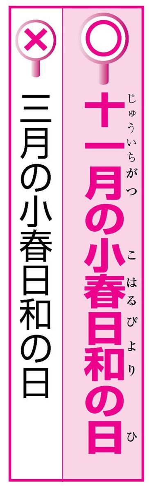
「三月ともなると暖かいね。今日はいい天気だね。ああ小春日和だなあ」
小春日和の「小春」とは、陰暦の十月ごろのことで、春の気分がすることから言う言葉です。
「小春日和」は晩秋から初冬にかけて春のように暖かい晴天の日のことです。これから冬本番、本格的な寒さがやってくるというのに、まるで春のような暖かい日だ、という意味で使われる言葉です。しかし「春」の字にひかれて、春の暖かい日と誤解する人が多くいます。
小春日
「会長自ら采配を振るう」
「采配」とは、昔の武将が戦場で士卒を指揮するために振った道具で、厚紙を細長く切ったふさを木や竹の柄に付けたものです。この「采配」は、「振る」ものであって「振るう」ものではありません。「采配を振る」で物事を指揮するという慣用句です。「采配を振るう」という言い方には、「権力を振るう」「腕を振るう」などとの混同があるようです。しかし、「采配を振るう」を認めている辞書も一部あるようです。
指揮を執る
「大会運営の指揮を振るう」
指揮とは、全体がまとまりをもって動くよう、人の上に立って指図をすることです。「指揮を執る」と言うのが正しい言い方です。
指揮を執るとき、目印として、よく棒や旗をかかげます。その例がオーケストラの指揮棒（タクト）です。オーケストラを指揮することを、「指揮棒を振る」と言います。
「指揮を振る（う）」は、これとの混同でしょうか。
采配を振る

「しまった。あいつに口先三寸で金をだまし取られた」
まごころのこもらない口だけの言葉のことを、「口先」とか「口先だけ」などと言いますから、「口先」か「舌先」か迷うところですが、正しくは「舌先三寸」です。
「舌先三寸」とは、三寸（約九センチ）ほどの長さの舌という意味で、自分の身を立てたり、相手を操ったりするのに使う、口先だけのたくみな言葉や、またその行為、ということです。
舌三寸
「この十年間に、勤めた会社は十指に余ります。八社ほどです」
「十指に余る」と言うと、十未満、七つか八つぐらいのことを言うと思う人もいるでしょう。
十指とは十本の指のことですが、「十指に余る」で、両手の指を折って数えても指が足りないほど多い、つまり十以上、ということを意味します。「余る」には、多すぎて残る、と、上回る、という二つの意味があり、ここでは後者の意味です。なお、「十指」は「ジュッシ」ではなく、「ジッシ」と読みます。
「斜めに構えた態度で人生を送る」
「斜に構える」はもとは、剣道で刀を斜めに構えて敵に向き合う、という意味です。
そこから転じて、何かに身構えたり、改まった態度をとったりすることを意味しました。
現代では、まじめに取り組もうとしないで、皮肉やからかいの態度で物事に対することを言います。「はすに構える」とも言うことがあり、この言い方は辞書に載っています。
しかし、「ななめに構える」は、まだ通用する言い方にはなっていません。
「向かい側の美人に秋波を送る」
「秋波」とは、秋の澄みきった波の意から、美人の澄んだ目元、また、女の色っぽい目つきのことを言います。「秋波を送る」は、女が男の関心を引こうと、媚びを含んだ目つきで見ることです。男性の色目を秋波とは言いません。美人「に」秋波を送る、は間違いです。
また「しゅうは」は、「愁いを含んだ目つき」という意味ではないので、「愁波」と書くのももちろん誤りです。
流し目を送る
「昨日、隣のおじいさんと将棋を打った」
将棋は「指す」もの、「碁」は「打つ」ものです。将棋では、駒を目的のところまで指ですべらせるように動かしていくことから「指す」と言います。囲碁では、碁石を盤上に打つように置くことから「打つ」と言います。
ゲーム・ギャンブルなどを行う意味を表す言葉には、そのやり方からできたものが多くあります。
マージャンを「打つ」、パチンコを「打つ」、花札を「引く」、などです。
「社長候補として白羽の矢が当たった」
「白羽の矢が立つ」は、多くのものの中から選び出されることです。昔、人身御供を求める神が、だれがよいかという意思表示として、自ら選んだ者の家に白い羽の付いた矢を立てた、という俗信からきた言葉です。したがって、「当たる」ではなく「立つ」です。
このように、もともとの意味は犠牲者として選ばれることでした。現代ではニュアンスが変わり、良いことに選ばれる意味に使われます。
白羽が立つ
「多くの方に、品質が良い、と烙印を押された製品です」
「太鼓判」とは、太鼓のように大きい印という意味で、確実だという保証のたとえです。「太鼓判を押される」は、絶対確実だと保証されることです。ふつう、良い意味で使われます。
一方「烙印」とは、焼き跡をつけて印とするために、物に押す金属製の印のことです。昔、刑罰として罪人の額などに押されました。ですからふつう、「烙印を押される」は、悪いことに使われ、好ましい意味には使われません。
「彼の引き際は、まさに飛ぶ鳥跡を濁さずといったところだ」
「立つ」は飛び立って行くの「立つ」です。「立つ鳥跡を濁さず」とは、飛び立って行く水鳥が水面を汚さないように、人も去るときには後始末すべきであるという教えです。人の引き際は潔くあるべきだということのたとえです。
「飛ぶ鳥」では、出発して立ち去る鳥の意が、今ひとつ感じられませんが、同じ意味として「飛ぶ鳥跡を濁さず」も使われています。
後は野となれ山となれ

「庭の柿の木に、たわわな実がついた」
「たわわ」は、その語感から、ふっくら、丸々と、などの意味に解釈されがちです。
しかし「たわわ」は、「たわむ」と関連した言葉で、木の枝や竹がしなうようすを表します。
「たわわ」は重さでしなうようすを表しますから、たわわな実ということはあり得ません。
ふつう「枝もたわわに」という言い方をします。果物などの実がたくさんなって、その重さで枝がしなって曲がっているさまを言い表す言葉です。
「そんな付けやいばの知識は、役に立たない」
「付け焼き刃」とは、その場をしのぐために、知識や技術などを一時の間に合わせに習い覚えることです。
切れない刀に刃の部分だけ焼きを入れたはがねを付けたもの、というのが、「付け焼き刃」の語源的意味です。「やいば」（漢字では「刃」と書きます）そのものは「焼き刃」が変化してできた語ですが、「付け焼き刃」を「付けやいば」とは言いません。
一夜漬け にわか仕込み
「彼なら、その難しい仕事をできると思うよ」
「できる」は本来、～「が」できる、の形で用います。
ただ、「仕事ができる」というのは「仕事をすることができる」の意味ですから、～「を」できる、の形が生まれてきたのも、自然なことではあります。
たとえば「ロシア語が話せる」の「話せる」のような可能動詞においても、「ロシア語を話せる」の形が、最近の傾向として、そう不自然でなくなってきています。
「芥川賞は、文壇への登竜の関門だ」
「登竜門」は、そこで良い結果をおさめれば出世への道が開かれるといわれる試験・コンテスト・賞などのことです。中国黄河の上流に「竜門」と呼ばれる急流があり、そこを登ることができた鯉は竜になるという言い伝えに基づく言葉です。「登 竜門」と区切られる言葉ですから、「登竜の関門」と「登竜」で切る言い方は成り立ちません。また、勢いの良いようすのたとえとして「昇竜の勢い」などとは言いますが、「登竜」という言葉は存在しません。
「どれも優秀な作品ばかりで、どんぐりの背比べだ」
「どんぐりの背比べ」とは、レベルが同じであることを表しますが、どれもこれも平凡で、特にすぐれて目立つものがないという意味です。
どんぐりは大きさが皆同じで、比べても意味がないことからきています。すぐれたものがそろっていることのたとえに使うのは誤りです。
すぐれた作品を評するのなら、「力作ぞろい」などと言うとよいでしょう。
五十歩百歩 似たり寄ったり
「我々は、物陰になりをひそめた」
「なりをひそめる」は「鳴りを潜める」と書いて物音を立てずに静かにしていることです。
ですから「物陰で」が正しく、「物陰に」だといま一つ意味がおかしいことになります「鳴り」は騒がしい声や音のことで、「身なり」のなりではありません。「大観衆が、鳴りを潜めて次の一球を見守った」のように使います。
また、「鳴りを潜める」は比喩的に、表立った活動をせず休止中であるとの意味もあります。
鳴りを静める
「卒業おめでとう。人間到る処青山ありと言いますから、君たちの未来は希望に満ちています」
「青山」は、遠く青々として見える山や、木々が青々と茂っている山のことではありません。生命力や希望を象徴するものと解釈して例文のように言っては間違いです。「青山」とは墓地のことです。死んで骨を埋める所という意です。「人間到る処青山あり」は、人はどこで死んでも骨を埋める所ぐらいはあるので、故郷を出て大いに活躍をしなさいという意味なのです。
「いくら注意してもぬかみそに釘だ」
「糠に釘」が正しい言い方です。糠に釘を打つように、手ごたえがなく効力がないことのたとえです。
「糠味噌」は糠に塩などを入れたもので、桶などにたくわえて野菜の漬物などを作ります。
こちらに釘を入れるのはナスを鮮やかな紫色に漬けるためです。
ちなみに、これは釘から出る鉄イオンがナスの色素（ナスニン）と結び付くためです。
豆腐に鎹 暖簾に腕押し
「彼女は、のべつひまなし愚痴を言っている」
「のべつ」は副詞で、絶え間なく続くようすです。
「のべつ幕なし」とは、芝居で、幕を引かずに続けて演じ通すことの意味から、少しも休まず、たて続けにすることを表します。
「少しも休まず」ということから、「のべつひまなし」と誤ってしまうのでしょう。
また、「のべつくまなし」という間違いも見受けられます。
ひっきりなし
「彼の話に、みんなへそをかかえて大笑いした」
これは「へそをかかえて」ではなく、正しくは「腹をかかえて」です。おかしくてたまらず大笑いすることを「腹をかかえて笑う」または「おなかをかかえて笑う」と言います。「へそ」はかかえることはできませんが、おかしくてたまらないことのたとえとして「へそで茶を沸かす」「へそが茶を沸かす」という言い方はあります。×の例文は、これとの混同による誤りでしょう。
抱腹絶倒
「必要にせがまれて、ついに携帯電話を買った」
これは、音が似ているための言い間違いだと思われます。
さらに、「迫られる」は強要される、強いられるという意味で、「せがまれる」と意味が似ているのも、間違えやすさの原因かもしれません。
「せがむ」は、ある事をしてくれるよう無理に頼む、しつこくねだる、という意味ですから、やはり「必要にせがまれて」ではなく、「必要に迫られて」が正しい言い方です。
「人数を、もうこれ以上増やせられない」
「増やせる」は増やすことができる、という意味の可能動詞です。可能動詞とは、動詞が可能の助動詞「る（れる）」を吸収して、それ自体で可能の意味を表すようになったものです。「書ける」「泳げる」「読める」などです。
「増やせる」も可能動詞なので、そのうえ可能の意味を表す「られる」を付けては意味が重複してしまいます。同様の誤用例としては、「こなせる」にさらに「られる」を付けた「こなせられない」も時々見受けられます。
「下手な考え休みに似たり、だ。さっさと結論を出そう」
正しくは「下手の考え休むに似たり」です。
「下手の考え」の「下手」は、下手な者、という意味です。
碁や将棋の下手な人は良い知恵もないのに長い時間考えるが、時間のムダだと、相手を嘲笑するときに使います。
これを「下手な考え」とすると、上手な人でも「下手な考え」をしてしまうものだ、くらいの意味になってしまいます。
「優秀賞をいただくとは、法外の喜びです」
「法外」は、並外れていて不当である、度が外れている、けた外れ、などのように、妥当だと思う限度を超えているという意味です。「法外な請求」のように使います。
「望外」は、「望外の幸せ」「望外の成功」などのように使い、願ってもないこと、願っていた以上に喜ばしいこと、という良い意味に使います。つまり喜びに対しては、「望外」が正しいのです。
思いもよらない
「彼ったら、子供みたく、はしゃぐのよ」
「～のよう」の意の「みたい」は、「みたいだ」「みたいに」「みたいな」と形容動詞の活用で使う語で、「みたく」とはなりません。
この「みたい」を「みたく」の形で使うのは、「行ってみたい→行ってみたくて」「食べてみたい→食べてみたくて」との混同による誤用と言われています。この「みたい」は「ためしに～する」意の動詞「みる」に希望を表す助動詞「たい」がついた語です。「～のよう」を表す「みたい」とは別語です。
「あまりに悲惨なニュースに、思わず耳をそむけたくなった」
聞きたくないことを、強いて聞かないようにすることは「耳をふさぐ」と言います。
一方、見たくないものを見ないようにすることは「目をそむける」と言います。
「そむける」は、後ろのほう、または脇のほうへ向かせるという意です。目であれば、そういうことも可能ですが、頭の両側についている耳は、後ろや脇にそらせようがありません。「耳をそむける」とは言いません。
「長引いていた交渉がようやくまとまって、肩をなでおろした」
難問や心配事などが解決したときの、ほっとした気持ちを表す言葉に「胸をなでおろす」や「肩の荷が下りる」などがあります。
例文の言い間違いは、おそらく、この両者の混同でしょう。
「肩」のつく表現は数多くありますが、「肩をなでおろす」という言い回しはありません。
「胸をなでおろす」が正しい言い方です。
安堵する
「燃えたぎる炎の中に飛び込む」
盛んに燃える、という意味で「燃えたぎる」という語をときどき耳にします。
「たぎる」は、水などがさか巻いて激しく流れたり、わき立ったりするようすを表す語です。
「湯がたぎる」「青春の血潮がたぎる」などと使いますが、火が燃えるようすには使いません。
「煮えたぎる」という語があり、「燃えたぎる」はそれとの混同と考えられます。
（ただ、「燃えたぎる」を許容する辞書も一部
あるようです。）
「副主任のポストは、私では役不足で、お引き受けできません」
「役不足」とは、与えられた役（役目）が実力とは不相応に軽い、実力のほうが上だ、という意味です。
「私では役不足」と言うと、こんなつまらない役目でなく、もっと重要な役目にかえてほしいといっていることになり、失礼な発言になります。それを言うなら「私では力不足」あるいは「私には荷が重い」と言うべきです。
力不足
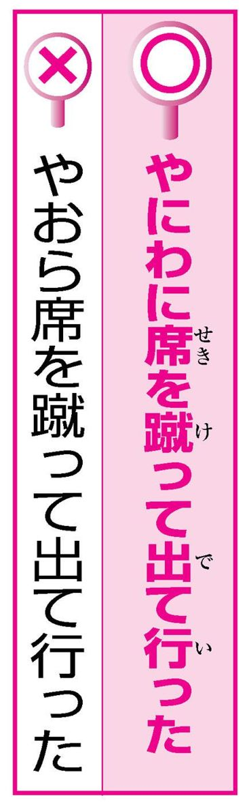
「怒った彼は、やおら席を蹴って出て行った」
「やおら」は、「突然、急に」という意味ではありません。静かにゆっくりと動作を始めるさまを言います。「やおら」を「突然、急に」だと思い込んでしまうのは、「すぐさま、いきなり」という意味の「やにわに」とよく似ているからでしょう。「やにわに」は「矢庭に」と書きます。矢を射ているその場所を「やにわ」と言い、「やにわに」は、「その場で、すぐに」という意味で用いられるようになり、後に「いきなり、突然」という意味になりました。
「彼には気をつけたほうがいい。なにしろ指折りのうそつきだから」
「指折り」とは、良いこと、すぐれたことに使う言葉です。多くのものの中で、指を折って数え上げられるほどすぐれているという意味です。
「日本でも指折りの作曲家」「県内で指折りの資産家」のように言います。ですから、「うそつき」の形容には適切ではありません。
ほかにすぐれていることを形容する言葉には、「名うて」や「折り紙つき」などがあります。
屈指
「娘の結婚に父親が横車を入れる」
「横車」は、後ろから押すべき車を横から押すように、道理に合わないこと、理不尽なことです。
「横車を押す」で、強引に無理を押し通すことです。
「横車」というものがあるわけではありません。「横車を入れる」は、「横槍を入れる（他人の話や仕事に、わきから口を出して文句を言う）」との混同でしょう。
ごり押しする
「新幹線の禁煙席をあらかじめ予約しておく」
「予約」や「予感・予告・予想・予知・予防」などの「予」は、前もって、あらかじめの意です。「予約」そのものに「あらかじめ」の意味が含まれているので、「あらかじめ予約する」と言うと、意味が重複することになります。「前もって予約しておく」も同様に意味が重複します。
ただし、「今から予約しておく」「一か月前に予約する」など、時期を限定する語であれば意味の重複とはなりません。
「相手を論破して、溜飲を晴らした」
「溜飲」とは、胃の消化作用の低下で、胸やけがしたり、すっぱい液がのどに出てきたりする症状のことです。
「溜飲を下げる」で、たまっていた不平・不満・恨みなどを解消して、気分をさっぱりさせることです。気分がよくなることを「溜飲が下がる」と言います。
「溜飲が下がる」と気分が晴れるので言い間違えるのでしょう。しかし、「晴らす」なら、「うっぷんを晴らす」です。
力だめし③
言い間違いチェック ～第３章で扱った言葉より～
問題１
次の文で言葉の使い方がおかしいところがあれば直してください。
１ のべつひまなし愚痴を言う。
２ 彼女に首っ丈だ。
３ 愛想を振りまく。
４ 苦しみを味あわなければならない。
５ 国家財政が危機に面している。
６ 腕よりのコックが調理する。
７ 押しも押されもせぬ大スター
８ 社長候補として白羽の矢が当たる。
９ もうこれ以上、人数を増やせられない。
10 経営の指揮を振るう。
問題２
文中の（ ）の二語のうち適切な方を選んでください。
１ 高熱に（うなされる／浮かされる）。
２ 友人と将棋を（打つ／指す）。
３ 父と酒を（酌み交わす／飲み交わす）。
４ 我々が勝利する公算が（強い／大きい）。
５（口先／舌先）三寸で金をだまし取る。
６ 必要に（迫られて／せがまれて）、英会話を習う。
７ ホッと（肩／胸）をなでおろす。
８ 怒り心頭に（発する／達する）。
力だめし③ 解答
問題１ 答え
１ のべつひまなし→のべつ幕なし
２ ○
３ 愛想を振りまく→愛敬を振りまく
４ 味あわなければ→味わわなければ
５ 面して→瀕して
６ 腕より→腕利き
７ ○
８ 白羽の矢が当たる→白羽の矢が立つ
９ 増やせられない→増やせない
10 指揮を振るう→指揮を執る
問題２ 答え
１ 高熱に浮かされる。
２ 友人と将棋を指す。
３ 父と酒を酌み交わす。
４ 我々が勝利する公算が大きい。
５ 舌先三寸で金をだまし取る。
６ 必要に迫られて英会話を習う。
７ ホッと胸をなでおろす。
８ 怒り心頭に発する。
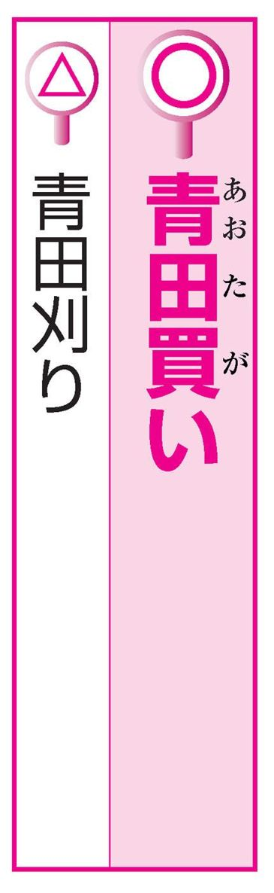
「優秀な学生を早めに青田刈りする」
企業が、翌年卒業見込みの学生の採用を早い時期に内定することを「青田買い」と言います。「青田」とは、葉が青く実が熟していない田のことです。「青田買い」はもとは、稲がまだ実らぬうちに収穫を当て込んで売買契約を結ぶ、という意味でした。「青田刈り」は、稲の生育が見込めないときに、泣く泣く青いうちに刈り取ってしまうことで、意味がちがいます。
しかし、採用の内定の意味で、「青田刈り」を認める辞書も一部あります。
「つい油断して、もう少しで足元をすくわれるところだった」
これは、「足をすくわれる」が正しい言い方です。「足をすくわれる」とは、ちょっとしたすきにつけ込まれて、相手に失敗させられるという意味です。
「すくう」は、下から上へ急に持ち上げるようにする、横にはらうなどの意味です。「足元」は、立っている足の近くやその付近、または立場・状態などの意味です。したがって、足はすくえても、足元を「すくう」ことは不可能です。
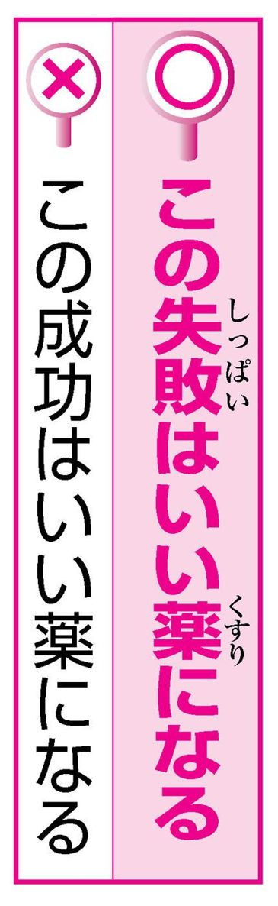
「自信を失っている彼にとって、この成功はいい薬になるだろう」
「いい薬になる」は、敗北や失敗などの良くない結果や経験から学ぶということです。
失敗や挫折などは、そのときは打撃となって一時はつらいが、後々自分のためになることが多いという意味です。
ですから、成功したときには用いません。
成功の場合は、「いい薬になる」よりは「励みになる」などと言ったほうが不自然ではないかもしれません。
「ウチは、一姫二太郎の三人の子どもに恵まれました」
「一姫二太郎」とは、子供を持つには、最初が女の子で、次は男の子という順が育てやすいのでよいというのが本来の意味で、「一・二」は子供の数ではなく、出生の順番を表しています。最初に男の子を期待していたのに、女の子だったときに慰めて言うことが多いようです。
しかし、子供の数が女の子が一人と男の子が二人、計三人の子が理想的だという意味にとる俗説もあるようです。
「お客様からの苦情を一手に握る」
「一手」とは、ただ一つの方法という意味のほかに、他人に分担させずに、自分一人だけで扱う、という意味があります。
この意味では「一手に引き受ける」「一手に握る」は同じ意味に使われます。
ただし、「一手に握る」と「一手に引き受ける」は、ニュアンスの違いがあります。
「一手に握る」は独り占めする、独占するという意味があります。苦情といった嫌な事を「一手に握る」というのはおかしな言い方です。
「昨夜は一晩中、上へ下への大騒ぎだった」
正しくは、「上を下への」です。
意味は、大勢の人が入り乱れてごったがえすようすです。
言葉のもつ印象からか、上へ行ったり下へ行ったりで大騒ぎしているという意味がありそうなため、間違えてしまうのでしょうか。
もともとは「上を下に返す」から来た言葉です。上にあるべきものが下に来て、下にあるべきものが上になってしまうように、混乱し、ごったがえすようすを表した言葉です。
「似而非の学問」「似而非の医者」
「似而非」は、似ているが本物とは違うまやかしものであるという意味を表す言葉です。
分類上は「接頭辞」と呼ばれるもので、「似而非芸術家」のようにそのまま他の語の上に付けて用いられます。意味の似た「にせ」は、「にせのダイヤ」「にせの手紙」のように「の」を伴って使うこともありますが、「似而非」は「似而非の」の形では使いません。
なお、「似而非」は「似非」とも書きます。
にせ まやかし
「まさかお前が、オレの妹と結婚することになるとはなあ、縁は奇なものだな」
正しくは「縁は異なもの」で、「縁は異なもの味なもの」の略です。男女の縁は常識では考えられない不思議でおもしろいものだという意味です。「奇」には、思いがけない、予想外などの意があり、「奇なもの」でも意味は通じますが、慣用句としては「異なもの」が正しい言い方です。似た言葉で「合縁奇縁」というのがあり、「奇なもの」は、これとの混同でしょう。
合縁奇縁 何事も縁
「先生、ほんのおすそ分け程度の物で恐縮ですが......」
「おすそ分け」とは、もらった物をさらに他人に分け与えることです。
「おすそ分け」の「すそ」とは、着物のすそのことです。
すそはいちばん地面に近い衣服の下の端の部分で、つまらない物という意味あいが含まれます。したがって、たとえ謙遜のつもりでも、目上の人に対して使うのは、適切とはいえません。
お福分け
「今の成績では、合格はおぼつきません」
「おぼつかない」は、物事のはっきりしないようすを言うのがもともとの意味です。現在では成否の疑わしいようすや、しっかりせず頼りないようすなどに言います。例文の「おぼつきません」は、「おぼつかない」を「おぼつく」という動詞の打ち消しの形と誤解したために生じた言い方でしょう。しかし、「おぼつく」という動詞があるわけではありません。「おぼつかない」は「はかない」「なさけない」などと同じく、もともとこういう形の形容詞なのです。

「アイツは、いつも上役の顔をうかがってばかりいる」
「顔色」は、顔の色やつやをいい、ふつうは「顔色が悪い」などと使います。また、心の動きが現れた顔のようす、顔つきなどをも意味します。
「顔色をうかがう」は後者の意です。相手のご機嫌を推し測る場合に使います。「顔色を見る」「顔色を読む」とも言います。「うかがう」のは、やはり「顔」ではなく「顔色」です。
腹を探る
「取引先各位様」「父兄各位様」「会員各位殿」
「各位」は、「～の皆様方」といった意味で、大勢の人を対象にして、その一人一人を敬って言う語です。
「各位」そのものにすでに敬意が含まれていますから、「各位様」「各位殿」とさらに敬称を付けては重複となってしまいます。
ただし「お客様各位」と使うのは、「お客各位」ではかえって言葉としておかしくなるので、誤りとはいえないでしょう。
「彼は、人の風下にも置けないやつだ」
性質や行動などが卑劣な人をののしるときには「風上にも置けない」という語を使います。
悪臭を放つものを風上に置くと、まともに受けてしまうので風上には置けないということからできた言葉です。
とても同じ仲間として同等に扱えないほど卑劣だという意味です。
卑劣＝順位の劣った下の方という類推で、「風下にも......」と間違えてしまうのかもしれません。
「今とは違い、かってはそうだった」「いまだかって聞いたことがない」
「かつて」は、漢字では「曾て」または「嘗て」と書きます。
過去のある時期、以前、昔、という意味です。「かつて」が本来の言い方ですが、一昔前までは「かって」が優勢でした。現在ではまた、本来の形に戻って「かつて」と言うほうが多くなっています。
もっとも「かって」という言い方も、大半の国語辞典で認められています。
「あいつは昔から金にいぎたない」
ケチである、欲が深いと言いたいのなら、「金に汚い」と言うべきです。
「いぎたない」は「寝穢い」と書き、いつまでもだらしなく寝ていることです。寝坊だ、寝相が悪い、といった意味です。
「金に汚い」というのを強調したくて、「いぎたない」と言ってしまうのかもしれませんが、まったく別の意味ですので、注意しましょう。また、「意地汚い」という意味に取り違えて「食べ方がいぎたない」などというのも誤りです。
「あの人は、気むずかしくて気が置けない人だ」
「気が置けない」とは、緊張したり遠慮したりする必要がなく、打ち解けられる、気が許せるという意味です。
例えば「気の置けない友達と旅行に行く」と言えば、気を使う必要のない親しい友達と旅行に行く、ということです。
「......ない」という否定の言葉から、気が許せない、油断できない、という意味に誤って使われることの多い語です。
気詰まりでない
「溺れている人を見つけたので、僕は着の身着のままで海に飛び込みました」
「着の身着のまま」とは、災害などにあって、現在着ている物のほかには何も持っていないことを言います。×の例文は、「着の身着のまま」を「着衣のまま」の意味に取り違えています。
なお、「着の身着のまま」と似た言い方の言葉に「着た切り雀」というのがあります。これは「舌切り雀」の語呂合わせで、今着ている衣服のほかに着がえがなく、いつも同じ服を着ていることを言いますので、意味は異なります。
「次々に客が座席を立ち、会場は櫛の歯が抜けたようになった」
人間の歯は「抜ける」ですが、櫛の歯は「欠ける」です。
櫛の歯は、歯のように一本一本生えているのではなく、のこぎりの歯のように刻みつけたものです。
ですから、抜けることはありません。
「櫛の歯が欠けたよう」で、揃って並んでいるはずのものが、ところどころなくなっているようす、また、不揃いなようすを言います。
「見覚えのない差出人から郵便物が届き、しきりに頭をかしげている」
「かしげる」とは、上体、あるいはその一部分をちょっと曲げることです。「首をかしげる」で、不審に思う意味を表します。不審の意味で「かしげる」のは頭ではなくて、首です。
ほかに「かしげる」ものには、顔・肩・体などがあります。傘など、立てて持つ物にも言います。
また、疑問に思い、考え込む意味では、「首をひねる」という言葉もあります。

「とってもおいしかったよ。君の料理の腕前、素人はだしだね」
それを言うならば、「玄人はだし」です。
「玄人」は、ある技芸に熟達している人です。
専門家、プロのことです。「素人」はその逆で、経験が乏しく専門家でない人のことです。
「玄人はだし」は、玄人がはだしで逃げる意から、素人なのに専門家が驚くほどその道に熟達していることを言います。
「素人はだし」という言葉はありません。
素人ばなれ
「二〇年後、彼は、功成り名を上げて帰郷した」
「功」とは、なしとげた仕事、特に成功をおさめた立派な仕事を言います。
「功成り名を遂げる」とは、こつこつと努力を積み重ねて、ついに成功し、世の中に名を知られるほどの人物になることです。
「名を上げる」も「名を遂げる」も、どちらも名声を得る、有名になることですから、「功成り名を上げる」でも意味は通じますが、やはり慣用句としては「名を遂げる」です。
立身出世
「私の初舞台は、評論家の間で悪評さくさくでした」
「さくさく」は「嘖嘖」と書きます。
「嘖」はざわざわと騒ぐようすを言い、「嘖嘖」は、中国では、しきりに舌打ちをしてほめるようすを言いました。日本では、人々が口々にほめそやすようすを言います。「名声嘖嘖たるものがある」「嘖嘖と賞賛を送った」などと言います。
したがって「悪評さくさく」という言い方はありません。悪評のときには、「悪評紛紛」という言い方があります。
「今年も○○神社において、神事が古式豊かに執り行われました」
これは「古式ゆかしく」が正しく、「古式豊かに」という表現はありません。
「古式」は昔から伝わっているやり方のことで、昔がしのばれるようすの意の「ゆかしく」と結び付きます。
古式に満ちて、という意味合いから「豊か」と間違えるのでしょう。
「豊かに」は、「詩情・愛情・表情」などの言葉の下につきます。
「おたくはうらやましいわ、才媛ぞろいの兄弟姉妹で」
「才媛」という言葉の「媛」は優美な女性という意味です。「才媛」は学問にすぐれた女性を言います。したがって男の人は含みません。
ところで、頭の良い人を表す言葉に「秀才」があります。主に男性を指して言いました。
（もとは昔の中国の官吏登用試験の科目の一つで、これに合格した人のことを言いました。）しかし最近では、女性に対しても使われます。
才女
「しかめっつらしい顔であいさつする」
「しかつめらしい」は、まじめくさって堅苦しいようすのことです。
「しかつべらしい」が音変化したもので、当て字で「鹿爪らしい」とも書きます。
しかめた顔という意味の「しかめっつら（顰めっ面）」と発音がよく似ています。特に「しかつめらしい顔」という場合は表情に関係してくるためか、「しかめっつらしい顔」と言い間違えやすいので注意が必要です。
堅苦しい
「はいわかりました。品物が到着次第、連絡いたします」
そのことが済んだらすぐという意の「～次第」は、「本人が帰り次第連絡する」のように、動詞に付くのが本来の用い方です。「到着」はこれだけでは動詞の形になっていないので、「到着する」という動詞形にして「到着し次第」というのが正しい言い方です。ただ「ししだい」というのが言いにくいため、「到着次第」のように「し」を省いた言い方が多用され、現在ではこのような使い方も認められてきています。
「舌の先の乾かぬうちに、もうウソをつくなんて」
正しくは「舌の根」です。舌の根は舌のねもと、舌のつけねのことです。あることを言ったすぐあとで、まるでその言葉を忘れてしまったかのように矛盾することを言ったりしたりする。そのことを非難するときに使う言葉です。
「舌先で言いくるめる」「舌先三寸」などからの連想で、「舌の先」と言い間違ってしまうのでしょう。
言う口の下から
「大声で一喝してやったら、ヤツは尻をまくって逃げてったよ」
「尻をまくる」とは、ふてぶてしく構える、威嚇するような態度に出る、居直る、という意味です。ならず者などが、着物のすそをまくってすわり込むところから生まれた言葉です。ですから、逃げ出すことを形容する言葉ではありません。逃げることを言うのであれば、「尻尾を巻いて逃げる」でしょう。「尻尾を巻く」は、動物が、降参の印に尻尾を巻き込むことで、敗北を認める、降参するという意味です。
「もういい加減、秘密をしゃべろ」
「しゃべる」の命令形は「しゃべろ」か「しゃべれ」か。正解は「しゃべれ」です。
「取る」の命令形が「取れ」、「掘る」の命令形が「掘れ」となるのと同じです。
「食べる」の命令形が「食べろ」であることなどから、類推で「しゃべろ」の形が誤って生まれたのでしょうか。打ち消しが「しゃべらない」のように、「ない」の前でア段の音になる動詞は、命令形が「しゃべれ」のようにエ段の音になるという規則性があります。
「珠玉の大作」
「珠」は海でとれる真珠、「玉」は山でとれる宝石のことです。「珠玉」とは、小さくてもすぐれているもの、美しいもののたとえに使われます。芸術、特に詩や文章をほめたたえるのに使われますが、小さいイメージから、大作や長編ではなくて、小品・短編や詩・短歌・俳句などに限って使われます。
「珠玉の小品」「珠玉の佳品」などと用います。「珠玉の長編小説」「珠玉の大作」などという表現は適当ではありません。
「条件を聞いて思わず食指がそそられた」
「食指」というなら「動く」です。（「そそられる」のは「食欲」です。）
「食指が動く」の「食指」とは人さし指のことです。
昔、中国の子公という人が、食指が動くと必ずごちそうにありつくことができると言ったという故事からきた言葉で、意味は、食欲がおこることです。
そこから転じて、ある物事に対し欲望や興味が生じることを意味します。

「彼とのデート、すごい楽しかったわ」
「恐ろしく大きい建物」の「恐ろしく」のように、形容詞が様態や動作を表す言葉を修飾するときは「～く」の形となります。
その意味で「すごい楽しい」というのは文法的に誤りです。
この言い方は、日常の話し言葉ではよく使われており、取り立てて問題視することはないのかもしれません。しかし、面接の場とか上司との会話、また文章など、正しい言葉づかいが要求される場では使わないほうが賢明でしょう。
「先輩を他山の石として、これからもがんばります」
「他山の石」とは、『詩経』の「他山の石、以て玉を攻むべし」からきた言葉です。よその山から出る粗悪な石でも、自分の宝石を磨くときに役立つ。転じて、自分より劣っている人のつまらぬ言動でも、自分の品性や知恵を磨くのに役立つということです。つまり、つまらないことでも自分を磨くのに役立つ、ということなので、目上の人に使うべき言葉ではありません。
人の振り見て我が振り直せ
「我々の要求を通すため、ストライキで会社に引きこもった」
「引きこもる」にも「立てこもる」にも、室内に閉じこもるという意味はありますが、微妙なニュアンスの違いがあります。「引きこもる」は、世間から身を引いて静かに暮らすという意味があります。「立てこもる」は、城や陣地などに閉じこもって、敵の攻撃を防ぐという意味があります。よってストライキなどでは、会社に「立てこもる」というのが正しいでしょう。
籠城
「断末の苦しみのために、のたうち回った」
「断末魔」は、息を引き取る間際、という意味です。「末魔」は体内にある特別な急所のことで、これに何かが触れると死ぬとされていました。その末魔を断つということから、死ぬことや死ぬ間際を意味する「断末魔」の語が生じました。ですから「断末 魔」ではなく「断 末魔」と区切られる言葉です。
「断末魔」を「断末」で区切ることはできません。また「断末」という語自体存在しません。
臨終
「まったく、お前は○○さんの爪のあかでも飲んだらどうだ」
いくら立派な人や尊敬している人のものでも、爪のあかを飲むのはためらいます。
すぐれた人の爪のあかを、煎じ薬として飲みでもして、その人にあやかるように心がけることを言うのなら、「爪のあかを煎じて飲む」というべきです。
「煎じる」を略してしまうと、慣用句にならず、本当に爪のあかを飲む行為そのものを表すだけになってしまいます。
「問題解決に有効的な手段を探る」
「～的」は、主に音読みの名詞に付いて、「平和的」「悲劇的」のように、そのような性質をもっている、そうしたようすの、という意味を表したり、「政治的発言」のように、それにかかわる、という意味を表したりする接尾辞です。
「友好的態度」などの「友好的」に引かれて「有効的」と言う人がいます。しかし、この言葉は文の終わりでは「有効だ」、他の言葉に続けてそれを修飾するときには「有効な」という形をとるのが正しいので、注意が必要です。
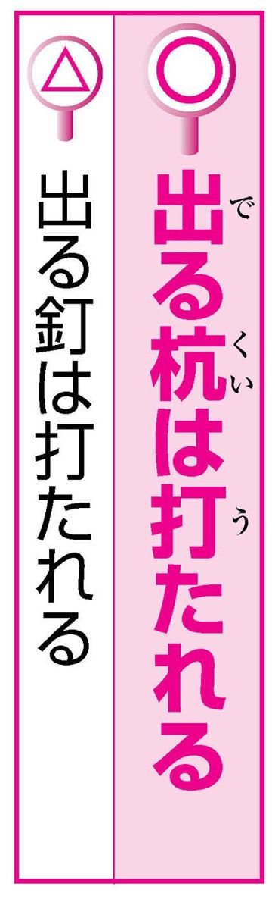
「あまり派手にやると、出る釘は打たれるぞ」
「釘」ではなくて「杭」が、本来の正しい言い方です。意味は、才能・手腕があってぬきんでている人は、とかく人から憎まれる、という意味です。杭とは、物を支えたり、目印にしたりするために地中に打ち込む棒状の木のことです。
杭も釘も、どちらも打ち込むものであり、読みも似ているため、間違いやすいものと思われます。ただし「出る釘は...」は広く使われているので、これを許容している辞書もあります。
喬木は風に折らる 高木に風強し
「結婚して以来、彼もすっかり温和になって、まるで奥さんに毒気を抜かれたようだ」
「毒気」は「どっき」あるいは「どっけ」「どくけ」と読みます。人の気持ちを傷つけるような感情、害悪のことです。「抜かれる」はそがれる意です。「毒気を抜かれる」とは、相手をやり込めようと勢いこんでいたのに、予想外の態度に気勢がそがれるという意味です。「ケンカも辞さない覚悟で行ったのに、いきなり謝られ毒気を抜かれてしまった」のように言います。
性格が円満になることではありません。
「話がうまく進んでいるのだから、流れに棹さして反対しないでください」
「流れに棹さす」とは、船頭が流れのままに棹をさして船をあやつることで、流れに乗るという意味です。転じて、世の中の大勢のままに進むこと、また、物事が順調に進むことです。
例文では、さからう、はむかう、という反対の意味に解釈してしまっているようです。「棹さす」を「水をさす」（＝邪魔をする）と混同していると思われます。
得手に帆を上げる 追い風に帆
「前任者の失敗を見ていたはずなのに、結局二の舞を踏んでしまった」
「二の舞」とは舞楽で「安摩」という舞に続いて、それをまねて舞うこっけいな舞のことです。
「二の舞を演じる」とは、ここから出た言葉で、前の人の失敗を後の人がくり返すことです。
「二の舞を演じる」が正しい言い方で、「二の舞を踏む」は誤用ですが、これを認める辞書もあります。「二の足を踏む」という語がありますが、これとの混同でしょうか。
前車の轍を踏む
「安全を念頭に入れて作業する」「相手の立場を念頭に入れて助言する」
これらは「念頭に置く」というのが正しい言い方です。おそらく、「頭に入れる」との混同でしょう。
「念頭に置く」とは、いつも忘れないで覚えていて、心に掛けることです。「念頭に置く」の「置く」は心に留める、気をつけるという意味です。「お見知り置きください」の「置く」も同じです。
心に留める
「その当時の彼女は，花も恥じらう内気な少女だった」
「花も恥じらう」は、若い女性の美しさを言った言葉です。
古語「はづかし」には、こちらが恥ずかしくなるほど相手がすぐれている、という意味があります。
「花も恥じらう」とは、花の方が恥ずかしがるぐらい、ういういしく美しい、という意味です。
美しい女性を形容する言葉ですから、内気で恥ずかしがりやという意味ではありません。
「入試の合格発表があり、落ちた人、受かった人、悲喜こもごもの光景が見られた」
「こもごも」は「交交」と書いて、かわるがわるの意です。「悲喜こもごも」とは、一人の人間が喜びや悲しみ、幸、不幸を味わうことです。
大勢の人が、喜んだり悲しんだりしているようすのたとえには使いません。
例文では、試験に受かって「喜んでいる人」と落ちて「悲しんでいる人」が「入り交じっていること」の意味に勘違いして使っているので誤りです。
「このプロジェクトが成功するのは火を見るより明らか」
「火を見るより明らか」は、疑いをさしはさむ余地がないほどはっきりしているという意味ですが、主に、悪い結果が予測される場合に使われます。何の問題もなく明白であるというときには使いません。
ですから「このプロジェクトが失敗するのは火を見るより明らか」というのなら正しい使い方ですが、例文は誤用です。
自明の理 明明白白
「初日から遅刻とはなんというていたらくぶりだ」
この場合の「～ぶり」は、他の語の下に付いて、「枝ぶり」「仕事ぶり」のように、～のようす、～のやり方という意味を添えます。
「ていたらく」は、好ましくないようすを軽蔑または自嘲して言う言葉です。
この語自体に「ようす」の意味がすでに含まれていますから、さらに「～ぶり」を付け加えて「ていたらくぶり」といってはおかしいことになります。
「的を得た意見」「的を得た答え」
これらは、「的を射た」が正しい言い方です。
「的を射る」は、矢を放って的に命中させる意から、物事の要点を的確にとらえることを言います。
「的」を「得る」では今ひとつ意味が明確ではありません。
判断・処理などが妥当であることを「当を得る」と言いますが、「的を得る」はこれとの混同によるものでしょう。
正鵠を射る
「この歌手は耳ざわりのいい声をしてるね」
「耳ざわり（耳障り）」とは、耳に障る（＝さまたげになる）ことで、聞いていて不愉快になる意味です。ですから、音でいうならば、快くない音を指していう言葉です。
同じ「さわり」でも、肌触り、手触りなどの言葉があり、それとの混同で「耳触り」が良いだの悪いだのといった使い方をされるのでしょう。本来、耳は聴覚ですから、この「触る」感覚はあてはまりません。しかし最近では、「耳触りのいい～」を認めている辞書もあります。
「いよいよ明日出発かと思うと、うれしくて期待に胸騒ぎがする」
「胸騒ぎ」とは、心配事や不吉な事などの予感がして、心が落ち着かないようすを表す語です。
なんとなく悪い事が起きるような気がして胸がどきどきすることですから、期待でどきどきするという気持ちを表すときには使いません。
それを言うなら、「胸が躍る」になります。
「胸騒ぎ」は、「帰りが遅すぎるので胸騒ぎがする」のように使います。
心が弾む
「目鼻が利く男だから任せておけばよい」
「目端」は、その場その場のようすをよく見はからう機転を言い、「目端が利く」で、その場に応じてよく才知が働くことを言います。
「目鼻が利く」と言うと、視覚と聴覚がすぐれている意になりそうですが、こういう言い方はありません。
「目鼻」を使った慣用句としては、「目鼻が付く（おおよその見通しが立つ）」「目鼻をつける（物事の大体のきまりをつける）」があります。
機転がきく
「月を見て、俳句を一句物にした」
「物する」と「物にする」とは、形が非常に似ていますが、意味は異なります。
「物する」とは、食べるとか、行くとか、書くなどといった何らかの行為や動作を、少々もったいぶって遠回しに言う言葉です。特に、文章や詩歌を作る場合に用いられます。ですから俳句を詠む場合には、「物にする」ではなく「物する」と言わなくてはなりません。
「物にする」は、成し遂げる、思い通りに手に入れる、習得することですから意味が違います。
「昔の恋人と再会して、焼けぼっくりに火がついた」
「焼け棒杭」は、焼けてこげた杭、燃えさしの杭のことです。
「焼け棒杭に火がつく」とは、一度燃えて炭化した杭は再び火がつきやすいことから、一度終わった男女の仲が再びもどることを言います。
棒杭という言葉があまり使われないことと、棒杭に似た音の「松ぼっくり」という言葉があるため、混同されやすいのだと思われます。
燃え杭に火が付く
「悠々迫らぬ態度で対する」
「悠揚」は、ゆったりとしてこせこせしないさま、落ち着いているようすのことです。「悠揚たる物腰」のように用いられますが、「悠揚迫らず（ぬ）」の形でも多く使われます。態度や雰囲気が落ち着き払って余裕があるようすを表す慣用句です（「迫らず」は窮屈なところがないという意味です）。「悠々」は、十分に余裕のあるさまのことです。「悠揚」と「悠々」は意味に共通するところがありますが、「悠々迫らず」という語はありません。
「ふだん目をかけてやっていた○○さんに、矢を引かれるなんて...」
矢はあくまで射るものです。弓を引き、矢をつがえて射るのですから、ここは「弓を引かれる」というのが正しい言い方です。「弓を引く」とは、弓に矢をつがえて射る、という意味ですが、転じてそむく、反抗するという意味をもちます。信用し引き立ててやった相手から裏切られたときの表現は、ほかに「飼い犬に手を噛かまれる」というのもあります。
反旗を翻す
「どんぶりにご飯をよそる」
ご飯や汁などを器に盛る意味の「よそう」は、昔は「装よそおう」の意味で使われた語でした。この語には、料理を皿や器に盛って整え、食事の用意をするという意味がありました。
そこから「ご飯をよそう」のような現在の使い方が生じました。
しかし、「よそう」と「盛る」とを混同し、「よそる」と言う人が次第に増えてきています。
そこで現在では、「よそる」を認める辞書もあります。
「世論」は、一般的には「ヨロン」と読む人が多いようです。
「ヨロン」は、元々は「輿論」と書いていました。「輿」は人を乗せる「こし」ですが、世間一般のことも表します。すなわち「輿論」とは、世間の大多数の人の意見のことです。
昭和二一年、「当用漢字表」が制定されたときに「輿」の字が漏れたため、「輿論」は昔からあった「世論」と言い換えるようになりました。その後、「世論」を「ヨロン」と読む人も増え、「セロン」「ヨロン」が併用されています。
「日を夜に継いで、ようやくトンネルが完成した」
昼夜の別なく、必死で造られたものなので、順序など問題ではないかもしれませんが、正しくは「夜を日に継ぐ」と言います。
ここには、日中だけではすまず、夜になっても、といったニュアンスがあります。
普通は、昼に働くことが多いのでこの順序になったものでしょう。
「日に夜を継ぐ」という言い方もあります。
夜を昼になす 昼夜兼行
「これまでの事情をわかっていない」
「知る」や「理解する」は「～を知る（理解する）」のように「～を」の形で使われますが、「わかる」は「～をわかる」でなく「～がわかる」と使います。漢字で「分かる」と書くように、「わかる」のもともとの意味は「別々になる」で、そこから、物事の区別がはっきりする、内容・事情などが理解されるというふうに意味が転じました。本来は、人ではなく物事のほうを主語とする動詞ですから、「～がわかる」という形が正しいのです。
力だめし④
言い間違いチェック ～第４章で扱った言葉より～
問題１
次の文で言葉の使い方がおかしいところがあれば直してください。
１ 彼といると、すごい楽しい。
２ つねに安全を念頭に入れる。
３ みんなの嫌がることを一手に握る。
４ 部下に足元をすくわれた。
５ しかめっつらしい顔つきであいさつする。
６ 親会社に弓を引く。
７ 舌の先の乾かぬうちに、もううそをつく。
８ 前任者の二の舞を演じる。
９ 功成り名を上げる。
10 有効的な治療をほどこす。
問題２
文中の（ ）の二語のうち適切な方を選んでください。
１ アイツは人の（風上／風下）にも置けないやつだ。
２ カラオケの腕前は（素人／玄人）はだし。
３ 櫛の歯が（抜けた／欠けた）よう。
４ 秘密を包み隠さず（しゃべれ／しゃべろ）。
５ 城に（立てこもって／引きこもって）抵抗する。
６ 的を（射た／得た）適確な質問。
７ （上へ下への／上を下への）大騒ぎ
８ それは本当だろうかと（頭／首）をかしげる。
力だめし④ 解答
問題１ 答え
１ すごい楽しい→すごく楽しい
２ 念頭に入れる→念頭に置く
３ 一手に握る→一手に引き受ける
４ 足元をすくわれた→足をすくわれた
５ しかめっつらしい→しかつめらしい
６ ○
７ 舌の先の乾かぬうちに→舌の根の乾かぬうち
８ ○
９ 名を上げる→名を遂げる
10 有効的な→有効な
問題２ 答え
１ アイツは人の風上にも置けないやつだ。
２ カラオケの腕前は玄人はだし。
３ 櫛の歯が欠けたよう。
４ 秘密を包み隠さずしゃべれ。
５ 城に立てこもって抵抗する。
６ 的を射た適確な質問。
７ 上を下への大騒ぎ
８ それは本当だろうかと首をかしげる。
日本人の知らない
間違いやすい日本語辞典
2014年11月10日 発行
著 者 日本語研究倶楽部
発行所 株式会社スマートゲート
〒150-0031 東京都渋谷区桜丘町30番17号103BLDG 3-4F